|
ОРДЕНА
ТРУДОВОГО |
ПОСОБИЕ
по
проектированию
бетонных и железобетонных
Конструкций
из ячеистых бетонов
(к СНиП 2.03.01-84)
Утверждено
приказом НИИЖБ Госстроя СССР
от 16 апреля 1985 г. № 20
Москва
Центральный
институт
типового проектирования
Рекомендовано к изданию секцией теории железобетона и арматуры НТС НИИЖБ Госстроя СССР.
Пособие по проектированию бетонных и железобетонных конструкций из ячеистых бетонов (к СНиП 2.03.01-84. Бетонные и железобетонные конструкции)/НИИЖБ, ЦНИИСК им. Кучеренко Госстроя СССР. - М.: ЦИТП Госстроя СССР, 1986.
Содержит основные положения по проектированию бетонных и железобетонных конструкций из ячеистых бетонов. Приведены данные о материалах, применяемых в указанных конструкциях, рекомендации по расчету и конструктивные требования. Даны примеры расчета.
Для инженерно-технических работников проектных организаций.
Табл. 25, ил. 17.
При пользовании Пособием необходимо учитывать утвержденные изменения строительных норм и правил и государственных стандартов, публикуемые в журнале «Бюллетень строительной техники», «Сборнике изменений к строительным нормам и правилам» Госстроя СССР и информационном указателе «Государственные стандарты СССР» Госстандарт.
ПРЕДИСЛОВИЕ
Пособие распространяется на проектирование элементов бетонных и железобетонных конструкций из различных видов ячеистых бетонов автоклавного и неавтоклавного твердения, применяемых в конструкциях гражданских, промышленных и сельскохозяйственных зданий.
Поскольку конструкции из ячеистых бетонов выполняются только в виде стеновых панелей, плит покрытий и перекрытий, то многие виды расчетов, предусмотренные СНиП 2.03.01-84, в Пособии не приводятся, в частности, расчеты кольцевых сечений на растяжение и кручение, выносливость, ширину раскрытия и закрытия косых трещин, влияние поперечной силы на прогиб, а также расчеты косвенного армирования.
В скобках указаны номера пунктов, таблиц и формул СНиП 2.03.01-84.
В Пособии использованы материалы разработок НИИСК и ДонпромстройНИИпроекта Госстроя СССР, ВНИИстрома, НИПИсиликатобетона Минстройматериалов СССР, НИИстроительства Госстроя ЭССР, ЛенЗНИИЭПа Госгражданстроя, а также ряда других научно-исследовательских и проектных организаций, высших учебных заведений, предприятий, изготовляющих изделия из ячеистых бетонов, строительных и монтажных организаций, осуществляющих строительство зданий с применением конструкций из ячеистых бетонов, а также использован опыт эксплуатации таких зданий. Пособие разработано НИИЖБ (кандидаты техн. наук К.М. Романовская, В.В. Макаричев) и ЦНИИСК им. Кучеренко (канд. техн. наук Н.И. Левин).
Замечания и предложения просьба направлять в НИИЖБ и ЦНИИСК им. Кучеренко Госстроя СССР по адресу: 109389, Москва, 2-я Институтская, д. 6.
1. ОСНОВНЫЕ ПОЛОЖЕНИЯ
1.1. Настоящее Пособие составлено к СНиП 2.03.01-84 и может быть использовано при проектировании элементов конструкций зданий и сооружений для гражданского, промышленного и сельскохозяйственного строительства из различных автоклавных и неавтоклавных ячеистых бетонов, работающих при систематическом воздействии температур не выше 50 °С и не ниже минус 70 °С, а именно:
а) бетонных однослойных, работающих на изгиб и внецентренное сжатие;
б) железобетонных однослойных с обычным армированием, работающих на изгиб и внецентренное сжатие;
в) железобетонных двухслойных с обычным армированием и предварительно напряженных, работающих на изгиб.
Автоклавные и неавтоклавные ячеистые бетоны, предусмотренные настоящим Пособием, должны соответствовать требованиям ГОСТ 25485-82.
Виды применяемых ячеистых бетонов приведены в прил. 1.
Проектирование ячеистобетонных конструкций для сейсмических районов допускается при условии выполнения требований СНиП II-7-81.
1.2. При проектировании элементов конструкций из ячеистых бетонов следует руководствоваться общими требованиями СТ СЭВ 384-76, СНиП II-6-74, СНиП II-3-79, СНиП 2.01.01-82, СНиП 2.03.01-84, а также требованиями настоящего Пособия.
1.3. Проектирование бетонных и железобетонных конструкций для работы в условиях агрессивной среды следует вести с учетом дополнительных требований, предъявляемых СНиП 2.03.11-85.
1.4. В целях обеспечения долговечности конструкций из ячеистых бетонов следует предусмотреть защиту их от увлажнения грунтовыми водами и интенсивного увлажнения атмосферными осадками, для чего рекомендуется применять защитно-декоративные отделки наружных поверхностей стен окрасочными составами, поризованными растворами с дроблеными каменными материалами в соответствии с СН 277-80.
1.5. Однослойные конструкции из ячеистых бетонов следует предусматривать для зданий с относительной влажностью воздуха внутри помещений до 60 %, а при наличии пароизоляции на внутренней поверхности стен - для зданий с влажностью воздуха внутри помещений до 75 %.
Допускается при соответствующем технико-экономическом обосновании вместо устройства пароизоляции увеличение толщины элементов стен исходя из условия исключения выпадания конденсата на их внутренней поверхности. Двухслойные конструкции с внутренним слоем из тяжелого бетона допускаются к применению без специальных мер защиты при влажности воздуха внутри помещений до 75 %.
1.6. Расчетная зимняя температура наружного воздуха и влажность окружающей среды определяются в соответствии с п. 1.8 СНиП 2.03.01-84.
1.7. Теплотехнический расчет элементов конструкций из ячеистых бетонов следует производить в соответствии со СНиП II-3-79.
Теплофизические характеристики ячеистых бетонов для наружных ограждающих конструкций в случае их отсутствия в СНиП II-3-79 рекомендуется принимать на основании опытных данных.
1.8. В рабочих чертежах, технических условиях на элементы конструкций из ячеистого бетона следует указывать вид ячеистого бетона и его характеристики: класс бетона по прочности на осевое сжатие, марку по плотности, прочность бетона при отпуске изделий с завода, а для элементов наружных ограждающих конструкций также марку по морозостойкости.
Кроме того, должны быть указаны вид, класс и марка стали для арматуры и закладных деталей.
1.9. При проектировании конструкций из ячеистых бетонов следует учитывать требования, предъявляемые СН 277-80 к способу их формования (литьевому, по вибротехнологии, по резательной технологии), и другие требования этой Инструкции.
1.10. Автоклавные ячеистые бетоны рекомендуется применять в зданиях и сооружениях I, II и III классов по степени ответственности.
Неавтоклавные ячеистые бетоны рекомендуется применять в зданиях и сооружениях II и III классов по степени ответственности.
Примечание. Классы по степени ответственности следует принимать по «Правилам учета степени ответственности зданий и сооружений при проектировании конструкций», утвержденным постановлением Госстроя СССР № 41 от 19 марта 1981 г.
1.11. При проектировании следует предусмотреть защиту арматуры и закладных деталей от коррозии в соответствии с СН 277-80.
1.12. Автоклавные и неавтоклавные ячеистые бетоны могут применяться в следующих элементах конструкций:
а) одно- и двухслойных панелях наружных и однослойных панелях внутренних стен;
б) одно- и двухслойных плитах покрытий;
в) неармированных и армированных стеновых крупных блоках;
г) неармированных стеновых мелких блоках.
Примечаниям: 1. Проектирование конструкций стен из мелких блоков осуществляется в соответствии со СНиП II-22-81, а прочностные характеристики ячеистых бетонов принимаются согласно настоящему Пособию.
2. Армированные крупноразмерные элементы из неавтоклавных ячеистых бетонов могут применяться при отсутствии в них недопустимых усадочных трещин.
3. Применение ячеистых бетонов в конструкциях внутренних стен и междуэтажных перекрытий допускается только при соответствующем технико-экономическом обосновании.
1.13. Стеновые панели из автоклавных ячеистых бетонов разрешается применять в зданиях независимо от их этажности при условии обеспечения расчетом необходимой прочности и деформативности.
Усилия, на которые рассчитываются ячеистобетонные стеновые панели и крупные блоки, а также стены из мелких блоков, определяются расчетом в зависимости от способа соединения наружных и внутренних стен или несущих каркасов (колонн, ригелей и плит перекрытий).
При жестком соединении наружных и внутренних стен с помощью сварки закладных деталей или замоноличивания арматурных выпусков стены рассчитываются как совместно работающие, т.е. как несущие. В этом случае нагрузки, приходящиеся на наружные стеновые панели или блоки из ячеистых бетонов, определяются из общего расчета зданий как совместной системы продольных, поперечных и горизонтальных дисков с учетом соотношения упругопластических свойств ячеистого бетона и материала внутренних конструкций зданий.
При соединении наружных ячеистобетонных стен с внутренними несущими конструкциями зданий (колоннами или стенами) с помощью горизонтальных гибких стержней и при наличии зазора между стенами и внутренними конструкциями элементы стен (панели или блоки) рассчитываются как самонесущие.
Для бескаркасных зданий, имеющих жесткое соединение (монолитную связь) между стенами из неавтоклавных ячеистых бетонов, предельной высотой следует считать три этажа.
1.14. Двухслойные плиты перекрытий или покрытий рекомендуется проектировать из слоя тяжелого бетона, плотного силикатного бетона класса по прочности не менее В10 при армировании без предварительного напряжения и не менее В17,5 с предварительным напряжением.
ОСНОВНЫЕ РАСЧЕТНЫЕ ТРЕБОВАНИЯ
1.15. Основные расчетные требования к проектированию бетонных и железобетонных однослойных конструкций из ячеистых бетонов принимаются в соответствии с пп. 1.10 - 1.13 и 1.19 - 1.22 СНиП 2.03.01-84, двухслойных предварительно напряженных с учетом пп. 1.17; 1.18 и 1.23 - 1.30 СНиП 2.03.01-84.
1.16 (1.16). К трещиностойкости конструкций из ячеистых бетонов предъявляются требования только 2- и 3-й категорий, т.е. допускается ограниченное по ширине кратковременное и длительное раскрытие трещин. Ко 2-й категории относятся предварительно напряженные двухслойные конструкции с арматурой классов A-V, A-VI и проволокой классов В-II и Вр-II диаметром 3,5 мм и более. Предельно допустимая ширина раскрытия трещин для данных конструкций принимается кратковременная acrc1 = 0,2 мм.
Однородные конструкции и конструкции с другими видами арматуры относятся к 3-й категории трещиностойкости. Предельно допустимая ширина раскрытия трещин для данных конструкций принимается: кратковременная аcrc1 = 0,4 мм, длительная аcrc2 = 0,3.
При расчете ширины раскрытия трещин коэффициент надежности по нагрузке (постоянной, длительной и кратковременной) gf принимается равным 1.
Указанные категории требований к трещиностойкости железобетонных конструкций относятся к трещинам, нормальным к продольной оси элемента.
Во избежание раскрытия продольных трещин следует принимать конструктивные меры (устанавливать соответствующую поперечную арматуру), а для предварительно напряженных элементов, кроме того, ограничивать значения сжимающих напряжений в бетоне в стадии предварительного обжатия (см. п. 1.29 СНиП 2.03.01-84).
Примечание. В конструкциях, в которых арматура покрывается антикоррозионным составом, допускается ширина раскрытия трещин аcrc2 до 0,5 мм.
1.17. Прогибы элементов железобетонных конструкций из ячеистых бетонов не должны превышать предельно допустимых значений, указанных в п. 1.20 СНиП 2.03.01-84.
Для элементов покрытий сельскохозяйственных зданий производственного назначения, если прогибы не ограничиваются технологическими или конструктивными требованиями, предельно допустимые прогибы принимаются равными при пролетах: до 6 м - 1/150 пролета, от 6 до 10 м - 4 см.
1.18 (1.21). При расчете по прочности бетонных и железобетонных элементов на действие сжимающей продольной силы должен приниматься во внимание случайный эксцентриситет еа, обусловленный не учтенными в расчете факторами. Эксцентриситет еа в любом случае принимается: не менее 1/600 длины элемента или расстояния между его сечениями, закрепленными от смещения, и 1/30 высоты сечения; не менее 2 см для несущих стен и 1 см для самонесущих стен.
Для элементов статически неопределимых конструкций значение эксцентриситета продольной силы относительно центра тяжести приведенного сечения е0 принимается равным эксцентриситету, полученному из статического расчета конструкции, но не менее еа. В элементах статически определимых конструкций эксцентриситет е0 находится как сумма эксцентриситетов - определяемого из статического расчета конструкции и случайного.
Расчет сжатых бетонных элементов прямоугольного сечения (в том числе армированных симметричной конструктивной арматурой) при величине эксцентриситета, определенного в соответствии с указанием настоящего пункта, 0 < е0 £ 0,225h и расчетной длине элемента l0 £ 20h допускается производить в соответствии с прил. 2.
1.19. Расстояние между температурно-усадочными швами устанавливается в соответствии с п. 1.22 СНиП 2.03.01-84.
1.20. При статических и теплотехнических расчетах элементов ячеистобетонных конструкций следует учитывать среднюю установившуюся влажность ячеистого бетона, принимаемую по табл. 1.
Таблица 1
|
Расчетная средняя установившаяся влажность ячеистых бетонов, % (по массе) |
|||
|
для стен, междуэтажных и вентилируемых чердачных перекрытий |
для покрытий |
||
|
вентилируемых |
невентилируемых |
||
|
На песке |
10 |
12 |
15 |
|
На золах |
10 |
15 |
20 |
1.21. Расчет предварительно напряженных двухслойных элементов конструкций из ячеистых бетонов, определение потерь напряжения и учет дополнительных требований к ним должны производиться в соответствии с пп. 1.23 - 1.30 СНиП 2.03.01-84. Длина зоны передачи напряжений определяется в соответствии с п. 2.29 СНиП 2.03.01-84.
2. МАТЕРИАЛЫ ДЛЯ БЕТОННЫХ И ЖЕЛЕЗОБЕТОННЫХ КОНСТРУКЦИЙ ИЗ ЯЧЕИСТЫХ БЕТОНОВ
ЯЧЕИСТЫЕ БЕТОНЫ
2.1. Для бетонных и железобетонных элементов конструкций из ячеистых бетонов, проектируемых в соответствии с рекомендациями настоящего Пособия, предусматриваются автоклавные и неавтоклавные бетоны, указанные в ГОСТ 25485-82.
2.2 (2.2). При проектировании бетонных и железобетонных элементов конструкций из ячеистых бетонов в зависимости от их назначения и условий работы следует устанавливать показатели качества бетона, основными из которых являются:
класс бетона по прочности на сжатие В (как правило, следует указывать в проекте);
марка по морозостойкости F (должна назначаться для конструкций, подвергающихся в увлажненном состоянии действию попеременного замораживания и оттаивания);
марка по средней плотности ячеистого бетона D.
Примечание. Определение понятий класс бетона и марка бетона см. по ГОСТ 25192-82.
Классы бетона по прочности на сжатие соответствуют значениям гарантированной прочности бетона, МПа, контролируемой на базовых образцах в установленные сроки согласно государственным стандартам с обеспеченностью 0,95 при средней установившейся влажности 10 ± 2 % (по массе).
2.3. Для бетонных и железобетонных элементов конструкций из ячеистых бетонов предусматриваются:
классы бетонов по прочности на сжатие при средней марке по плотности - в соответствии с табл. 2;
марки по морозостойкости: F15; F25; F35; F50; F75; F100;
марки по средней плотности - в соответствии с табл. 2.
Таблица 2
|
Марка по средней плотности D, кг/м3 |
Класс по прочности на сжатие, МПа, для ячеистых бетонов |
|
|
автоклавных |
неавтоклавных |
|
|
500 |
В1; В1,5 |
- |
|
600 |
B1; B1,5; B2; В2,5 |
B1; В1,5 |
|
700 |
В1,5; В2; В2,5; В3,5 |
B1,5; B2; В2,5 |
|
800 |
В2,5; В3,5; В5 |
В2; В2,5; В3,5 |
|
900 |
В3,5; В5; В7,5 |
В3,5; В5 |
|
1000 |
В5; В7,5; В10 |
В5; В7,5 |
|
1100 |
В7,5; В10; В12,5; В15 |
В7,5; В10 |
|
1200 |
В10; В12,5; В15 |
В10; В 12,5 |
2.4. Величины отпускной прочности ячеистого бетона в элементах сборных конструкций устанавливаются соответствующими государственными стандартами на сборные изделия.
2.5. Для двухслойных предварительно напряженных элементов класс тяжелого бетона по прочности на сжатие принимается в соответствии с п. 2.6 СНиП 2.03.01-84.
2.6. Среднюю плотность для определения собственного веса бетонных и железобетонных элементов конструкций из ячеистого бетона следует принимать по табл. 3.
Таблица 3
|
Плотность ячеистого бетона с учетом расчетной влажности 10 %, кг/м3 |
Марка по средней плотности D, кг/м3 |
|
550 |
500 |
|
660 |
600 |
|
770 |
700 |
|
880 |
800 |
|
990 |
900 |
|
1100 |
1000 |
|
1210 |
1100 |
|
1320 |
1200 |
Примечания: 1. Для железобетонных элементов конструкций из ячеистых бетонов плотность принимается на 50 кг/м3 выше, чем для бетонных.
2. При наличии фактических данных по расходу арматуры и влажности бетона в элементах конструкций разрешается принимать иные значения плотностей, но не менее указанных в табл. 3 с учетом примеч. 1.
2.7. Марки ячеистого бетона по морозостойкости бетонных и железобетонных элементов конструкций в зависимости от режима их эксплуатации и значений расчетных зимних температур наружного воздуха в районе строительства следует принимать:
для конструкций зданий (кроме наружных стен отапливаемых зданий) - не ниже указанных в табл. 9 СНиП 2.03.01-84;
для наружных стен отапливаемых зданий - не ниже указанных в табл. 10 СНиП 2.03.01-84.
Примечание. Минимальную марку ячеистого бетона по морозостойкости в наружных несущих элементах сборных конструкций следует принимать не ниже F25.
2.8. Для замоноличивания стыков и швов элементов сборных конструкций из ячеистого бетона следует применять строительные растворы проектной марки по прочности на сжатие не ниже M75, марки по плотности D1500 в соответствии со СНиП II-22-81.
Для стыков и швов, которые в процессе эксплуатации или монтажа могут подвергаться воздействию отрицательных температур наружного воздуха, следует применять растворы и бетоны проектных марок по морозостойкости не ниже принятых для стыкуемых элементов.
Примечание. При назначении вида, проектной марки и состава раствора для монтажных швов необходимо учитывать требования, приведенные в СН 290-74.
Нормативные и расчетные
характеристики бетона
2.9 (2.11). Нормативными сопротивлениями бетона являются сопротивление осевому сжатию призм (призменная прочность) Rbп и сопротивление осевому растяжению Rbtn.
2.10. Нормативные сопротивления бетона сжатию Rbn и нормативные сопротивления бетона растяжению Rbtn (с округлением) в зависимости от класса бетона по прочности на сжатие В приведены в табл. 4.
2.11. Расчетные сопротивления бетона для предельных состояний первой и второй групп определяются путем деления нормативных сопротивлений на соответствующие коэффициенты надежности по бетону при сжатии gbc или при растяжении gbt, принимаемые по табл. 5.
Расчетные сопротивления бетона для предельных состояний второй группы Rb, ser и Rbt, ser вводят в расчет с коэффициентом условий работы бетона gbi = 1.
Значения расчетных сопротивлений в зависимости от класса бетона для предельных состояний первой группы приведены в табл. 6, для предельных состояний второй группы - в табл. 4.
Расчетные сопротивления бетона для предельных состояний первой группы Rb и Rbt, приведенные в табл. 6, снижаются (или повышаются) путем умножения на коэффициенты условий работы бетона gbi, учитывающие особенности свойств бетона, длительность действия нагрузки, условия и стадии работы конструкций и т.п. согласно табл. 7.
Таблица 4
|
Нормативные сопротивления ячеистого бетона сжатию Rbn и растяжению Rbtn; расчетные сопротивления для предельных состояний второй группы и Rb, ser и Rbt, ser, МПа, при классе бетона по прочности на сжатие |
||||||||||
|
В1 |
В1,5 |
В2 |
В2,5 |
В3,5 |
В5 |
В7,5 |
В10 |
В12,5 |
В15 |
|
|
Сжатие осевое (призменная прочность) Rbn и Rb, ser |
0,95 9,69 |
1,40 14,3 |
1,90 19,4 |
2,4 24,5 |
3,3 33,7 |
4,60 46,9 |
6,9 70,4 |
9,0 91,8 |
10,5 107 |
11,5 117 |
|
Растяжение осевое Rbtn и Rbt, ser |
0,14 1,43 |
0,22 2,24 |
0,26 2,65 |
0,31 3,16 |
0,41 4,18 |
0,55 5,61 |
0,63 6,42 |
0,89 9,08 |
1,00 10,2 |
1,05 10,7 |
Примечания: 1. Над чертой приведены расчетные сопротивления в МПа, под чертой - расчетные сопротивления в кгс/см2.
2. Величины нормативных сопротивлений ячеистых бетонов даны для состояния средней влажности ячеистого бетона 10 % (по массе).
Таблица 5
|
первой |
второй |
||
|
gbc |
gbt |
gbc |
gbt |
|
1,5 |
2,3 |
1,0 |
1,0 |
Таблица 6
|
Расчетные сопротивления ячеистого бетона для предельных состояний первой группы Rb и Rbt, МПа, при классе бетона по прочности на сжатие |
||||||||||
|
В1 |
B1,5 |
В2 |
В2,5 |
В3,5 |
В5 |
В7,5 |
В10 |
В12,5 |
В15 |
|
|
Сжатие осевое (призменная прочность) Rb |
0,63 6,42 |
0,95 9,69 |
1,3 13,3 |
1,6 16,3 |
2,2 22,4 |
3,1 31,6 |
4,6 46,9 |
6,0 61,2 |
7,0 71,4 |
7,7 78,5 |
|
Растяжение осевое Rbt |
0,06 0,612 |
0,09 0,918 |
0,12 1,22 |
0,14 1,43 |
0,18 1,84 |
0,24 2,45 |
0,28 2,86 |
0,39 4,0 |
0,44 4,49 |
0,46 4,69 |
Примечания: 1. Над чертой указаны расчетные сопротивления в МПа, под чертой - в кгс/см2.
2. Значения расчетных сопротивлений ячеистых бетонов даны для состояния средней влажности ячеистого бетона 10 % (по массе).
Таблица 7
|
Факторы, обуславливающие введение коэффициентов условий работы бетона |
Коэффициенты условия работы бетона |
|
|
условные обозначения |
значение |
|
|
1. Длительность действия нагрузки: |
||
|
а) при учете постоянных, длительных и кратковременных нагрузок, кроме нагрузок непродолжительного действия, суммарная длительность действия которых за период эксплуатации мала (например, крановые нагрузки; ветровые; нагрузки, возникающие при изготовлении, транспортировании и возведении), а также при учете особых нагрузок, вызванных деформациями просадочных, набухающих, вечномерзлых и тому подобных грунтов |
gb2 |
0,85 |
|
б) при учете в рассматриваемом сочетании кратковременных нагрузок (непродолжительного действия) или особых, не указанных в поз. 1а |
gb2 |
1,10 |
|
2. Бетонирование в вертикальном положении при высоте слоя бетонирования более 1,5 м |
gb3 |
0,80 |
|
3. Эксплуатация не защищенных от солнечной радиации конструкций в климатическом подрайоне IVA согласно СНиП 2.01.01-82 |
gb7 |
0,85 |
|
4. Бетонные конструкции |
gb9 |
0,90 |
|
5. Влажность ячеистого бетона, %: |
gb11 |
|
|
10 и менее |
1,00 |
|
|
25 и более |
0,85 |
|
|
от 10 до 25 |
По интерполяции |
|
Примечания: 1. В табл. 7 приведены коэффициенты условий работы, учитываемые при расчете конструкций из ячеистых бетонов.
2. Если при учете особых нагрузок вводится дополнительный коэффициент условий работы меньше единицы согласно указаниям соответствующих документов (например при учете сейсмических нагрузок), коэффициент gb2 принимается равным единице.
3. Коэффициенты gbi по поз. 1, 3, 4, 5 должны учитываться при определении Rb и Rbt, а по поз. 2 - только при определении Rb.
4. Коэффициенты условий работы бетона вводятся независимо один от другого с тем, однако, чтобы их произведение было не менее 0,45.
2.12. Значения начального модуля упругости Еb при сжатии и растяжении для ячеистых бетонов с влажностью 10 ± 2 % (по массе) принимаются по табл. 8.
В климатическом подрайоне IVА для конструкций, не защищенных от действия солнечной радиации, значения Еь, указанные в табл. 8, следует умножать на коэффициент 0,85.
При соответствующем экспериментальном обосновании допускается учитывать влияние не только класса бетона по прочности и его марки по плотности, но и состава и вида вяжущего, а также условий изготовления и твердения бетона, при этом можно принимать другие значения Еь, согласованные в установленном порядке.
Таблица 8
|
Марка по средней плотности D, кг/м3 |
Начальные модули упругости автоклавного ячеистого бетона при сжатии и растяжении Еb · 10-3, МПа, при классе бетона по прочности на сжатие |
|||||||||
|
В1 |
В1,5 |
В2 |
В2,5 |
В3,5 |
В5 |
В7,5 |
В10 |
В12,5 |
В15 |
|
|
500 |
1,1 11,2 |
1,4 14,3 |
- |
- |
- |
- |
- |
- |
- |
- |
|
600 |
1,4 14,3 |
1,7 17,3 |
1,8 18,4 |
2,1 21,4 |
- |
- |
- |
- |
- |
- |
|
700 |
- |
1,9 19,4 |
2,2 22,4 |
2,5 25,5 |
2,9 29,6 |
- |
- |
- |
- |
- |
|
800 |
- |
- |
- |
2,9 29,6 |
3,4 34,7 |
4,0 40,8 |
- |
- |
- |
- |
|
900 |
- |
- |
- |
- |
3,8 38,8 |
4,5 45,9 |
5,5 56,1 |
- |
- |
- |
|
1000 |
- |
- |
- |
- |
- |
5,0 51,0 |
6,0 61,2 |
7,0 71,4 |
- |
- |
|
1100 |
- |
- |
- |
- |
- |
- |
6,8 69,3 |
7,9 80,6 |
8,3 84,6 |
8,6 87,7 |
|
1200 |
- |
- |
- |
- |
- |
- |
- |
8,4 85,7 |
8,8 89,7 |
9,3 94,8 |
Примечания: 1. Над чертой указаны значения Еb · 10-3 в МПа, под чертой - в кгс/см2.
2. Для ячеистого бетона неавтоклавного твердения значения Eb принимают как для бетона автоклавного твердения с умножением на коэффициент 0,8.
2.13 (2.15). Коэффициент линейной температурной деформации ячеистых бетонов abt при изменении температуры от минус 40 до плюс 50 °С принимается равным abt = 0,8 · 10-5 °С-1.
При наличии данных о минералогическом составе заполнителей, расходе цемента, степени водонасыщения бетона, морозостойкости и т.д. допускается принимать другие значения abt, обоснованные в установленном порядке. Для расчетной температуры ниже минус 50 °С значения abt принимаются по экспериментальным данным.
2.14 (2.16). Начальный коэффициент поперечной деформации ячеистых бетонов (коэффициент Пуассона) v принимается равным 0,2, а модуль сдвига ячеистых бетонов G - равным 0,4 соответствующих значений Eb, указанных в табл. 8.
АРМАТУРА
2.15 (2.17). Для армирования железобетонных конструкций должна применяться арматура, отвечающая требованиям соответствующих государственных стандартов или утвержденных в установленном порядке технических условий и принадлежащая к одному из следующих видов.
Стержневая арматурная сталь:
а) горячекатаная - гладкая класса A-I, периодического профиля - классов А-II, А-III, A-IV; A-V; A-VI;
б) термомеханически и термически упрочненная - периодического профиля классов Ат-III, Aт-IV.
Проволочная арматурная сталь:
в) арматурная холоднотянутая проволока:
обыкновенная - периодического профиля класса Вр-I;
высокопрочная - гладкая класса В-II, периодического профиля класса Вр-II.
Для закладных деталей и соединительных накладок применяется, как правило, прокатная углеродистая сталь соответствующих марок согласно обязательному приложению 2 СНиП 2.03.01-84.
В железобетонных конструкциях допускается применять арматуру других видов сталей, в том числе упрочненную вытяжкой на предприятиях строительной индустрии стержневую арматуру класса А-IIIв, а также в качестве конструктивной арматуры - обыкновенную гладкую проволоку класса B-I. Применение арматуры новых видов, осваиваемых промышленностью, должно быть согласовано в установленном порядке.
Примечания: 1. Применение специальных индексов в обозначении классов упрочненной и термомеханически упрочненной стержневой арматуры для однослойных и двухслойных конструкций из ячеистого бетона производится в соответствии с примеч. 1, 2, 3 п. 2.17 СНиП 2.03.01-84.
2. В дальнейшем в Пособии используются следующие термины:
стержень - для обозначения арматуры любого диаметра, вида и профиля независимо от того, поставляется ли она в прутках или мотках (бухтах);
диаметр d обозначает номинальный диаметр стержня, если не оговорено особо.
2.16 (2.18). Выбор арматурных сталей следует производить в зависимости от типа конструкции, наличия предварительного напряжения, а также от условий возведения и эксплуатации здания или сооружения в соответствии с п. 2.19.
2.17 (2.19). В качестве ненапрягаемой арматуры железобетонных конструкций следует преимущественно применять:
а) стержневую арматуру класса А-III;
б) арматурную проволоку диаметром 3 - 5 мм класса Вр-I (в сварных сетках и каркасах);
допускается также применять:
в) стержневую арматуру классов А-II и A-I для поперечной арматуры, а также в качестве продольной арматуры, если другие виды арматуры не могут быть использованы.
Ненапрягаемая рабочая и конструктивная арматура в конструкциях из ячеистых бетонов должна применяться в виде сварных каркасов и сеток.
2.18. В качестве напрягаемой арматуры предварительно напряженных двухслойных железобетонных элементов из ячеистых бетонов при длине до 12 м включ. может применяться:
а) арматурная проволока классов В-II; Вр-II;
б) горячекатаная арматура классов A-V; A-VI;
г) допускается применять стержневую арматуру классов А-IIIв, A-IV.
2.19 (2.23). При выборе вида и марок стали для арматуры, устанавливаемой по расчету, а также прокатных сталей для закладных деталей должны учитываться температурные условия эксплуатации конструкций и характер их нагружения согласно обязательным приложениям 1 и 2 СНиП 2.03.01-84.
В климатических зонах с расчетной зимней температурой ниже минус 40 °С при проведении строительно-монтажных работ в холодное время года несущая способность в стадии возведения конструкций с арматурой, допускаемой к применению только в отапливаемых зданиях, должна быть обеспечена исходя из расчетного сопротивления арматуры с понижающим коэффициентом 0,7 и расчетной нагрузки с коэффициентом надежности по нагрузке gf = 1.
2.20 (2.24). Для монтажных (подъемных) петель элементов сборных железобетонных и бетонных конструкций должна применяться горячекатаная арматурная сталь класса Ас-II марки 10ГТ и класса А-I марок ВСт3сп2, ВСт3пс2.
В случае, если возможен монтаж конструкций при расчетной зимней температуре ниже минус 40 °С, для монтажных петель не допускается применять сталь марки ВСт2пс2.
Нормативные и расчетные характеристики арматуры
2.21. Нормативные сопротивления Rsn для основных видов стержневой и проволочной арматуры приведены соответственно в табл. 9 и 10.
Таблица 9 (19)
|
Нормативные сопротивления растяжению Rsn и расчетные сопротивления растяжению для предельных состояний второй группы Rs,ser, МПа (кгс/см2) |
|
|
A-I |
235 (2400) |
|
А-II |
295 (3000) |
|
А-III |
390 (4000) |
|
A-IV |
590 (6000) |
|
A-V |
785 (8000) |
|
A-IIIв |
540 (5500) |
|
A-VI |
980 (1000) |
Таблица 10 (20)
|
Диаметр, мм |
Нормативные сопротивления растяжению Rsn и расчетные сопротивления растяжению для предельных состояний второй группы Rs,ser, МПа (кгс/см2) |
|
|
Вр-I |
3 |
410 (4200) |
|
4 |
405 (4150) |
|
|
5 |
395 (4050) |
|
|
В-II |
3 |
1490 (15200) |
|
4 |
1410 (14400) |
|
|
5 |
1335 (13600) |
|
|
6 |
1255 (12800) |
|
|
7 |
1175 (12000) |
|
|
8 |
1100 (11200) |
|
|
Вр-II |
3 |
1460 (14900) |
|
4 |
1370 (14000) |
|
|
5 |
1255 (12800) |
|
|
6 |
1175 (12000) |
|
|
7 |
1100 (11200) |
|
|
8 |
1020 (10400) |
Примечание. В табл. 10 приведены виды арматуры, применение которых целесообразно в конструкциях из ячеистого бетона.
2.22. Расчетные сопротивления арматуры растяжению для основных видов стержневой и проволочной арматуры приведены в табл. 11 и 12.
Таблица 11
|
Расчетные сопротивления арматуры для предельных состояний первой труппы, МПа (кгс/см2) |
|||
|
растяжению |
сжатию |
||
|
продольной Rs |
поперечной (хомутов и отогнутых стержней) Rsw |
продольной Rsc |
|
|
A-I |
225 (2300) |
Rswgsw8 |
225 (2300) |
|
А-II |
280 (2850) |
(см. табл. 13) |
280 (2850) |
|
A-III диаметром, мм: |
|||
|
6 - 8 |
355 (3600) |
355 (3600) |
|
|
10 - 20 |
365 (3750) |
365 (3750) |
|
|
A-IV |
510 (5200) |
400 (4000) |
|
|
A-V |
680 (6950) |
400 (4000) |
|
|
A-VI |
815 (8300) |
400 (4000) |
|
|
A-IIIв с контролем: |
|||
|
удлинения и напряжения |
490 (5000) |
200 (2000) |
|
|
только удлинения |
450 (4600) |
200 (2000) |
|
Примечания: 1. В сварных каркасах для хомутов из арматуры класса А-III, диаметр которых меньше 1/3 диаметра продольных стержней, значения Rsw принимаются равными 255 МПа (2600 кгс/см2).
2. Расчетные сопротивления растянутой поперечной арматуры и сжатой продольной принимаются с учетом коэффициентов, указанных в пп. 2.23, 2.24 и табл. 13.
Таблица 12
|
Диаметр, мм |
Расчетные сопротивления арматуры для предельных состояний первой группы, МПа (кгс/см2) |
|||
|
растяжению |
сжатию Rsc |
|||
|
Продольной Rs |
поперечной (хомутов и отогнутых стержней) Rsw |
|||
|
Вр-I |
3 |
375 (3850) |
Rswgsw8 (см. табл. 13) |
375 (3850) |
|
4 |
365 (3750) |
365 (3750) |
||
|
5 |
360 (3700) |
360 (3700) |
||
|
В-II |
3 |
1240 (12650) |
400 (4000) |
|
|
4 |
1180 (12000) |
400 (4000) |
||
|
5 |
1110 (11300) |
400 (4000) |
||
|
6 |
1050 (10600) |
400 (4000) |
||
|
7 |
980 (10000) |
400 (4000) |
||
|
8 |
915 (9300) |
400 (4000) |
||
|
Вр-II |
3 |
1215 (12400) |
400 (4000) |
|
|
4 |
1145 (11700) |
400 (4000) |
||
|
5 |
1045 (10700) |
400 (4000) |
||
|
6 |
980 (10000) |
400 (4000) |
||
|
7 |
915 (9300) |
400 (4000) |
||
|
8 |
850 (8700) |
400 (4000) |
||
Таблица 13
|
Расчетные сопротивления растяжению поперечной Rsw и сжатой Rsc арматуры, МПа (кгс/см2), при классе ячеистого бетона по прочности на сжатие |
||||||||||
|
В1 |
В1,5 |
В2 |
В2,5 |
В3,5 |
В5 |
В 7,5 |
В10 |
В12,5 |
В15 |
|
|
Поперечная |
25 255 |
37,5 380 |
50 510 |
62,5 640 |
87,5 900 |
125 1270 |
187,5 1900 |
250 2550 |
310 3200 |
375 3800 |
|
Сжатая продольная |
230 2350 |
250 2550 |
270 2750 |
295 3000 |
340 3450 |
390 4000 |
390 4000 |
390 4000 |
390 4000 |
390 4000 |
Примечания: 1. Над чертой даны классы бетона по прочности и расчетные сопротивления, МПа; под чертой - расчетные сопротивления, кгс/см2.
2. Расчетные сопротивления арматуры даны с учетом коэффициентов условий ее работы в бетоне классов В15 и ниже:
для сжатой арматуры 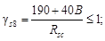
«поперечной» 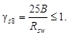
2.23. Расчетные сопротивления арматуры сжатию Rsc, используемые при расчете конструкций по предельным состояниям первой группы, принимаются по табл. 11 и 12 с учетом коэффициентов условий работы gs9 по табл. 14 и не более величин, указанных в табл. 13.
2.24. Расчетные сопротивления поперечной арматуры в конструкциях из ячеистого бетона при работе их по наклонным сечениям на действие поперечной силы и изгибающего момента принимаются по табл. 13.
Таблица 14 (27)
|
Коэффициент условий работы gs9 при арматуре |
||
|
гладкой |
периодического профиля |
|
|
1. Цементно-полистирольное или латексно-минеральное |
1 |
1 |
|
2. Цементно-битумное (холодное) при диаметре арматуры, мм: |
||
|
св. 6 |
0,7 |
1 |
|
до 6 |
0,7 |
0,7 |
|
3. Битумно-силикатное (горячее) |
0,7 |
0,7 |
|
4. Битумно-глинистое |
0,5 |
0,7 |
|
5. Сланцебитумное, цементное |
0,5 |
0,5 |
2.25. Длина передачи напряжения l0 для напрягаемой арматуры двухслойных конструкций определяется согласно п. 2.29 СНиП 2.03.01-84.
2.26 (2.30). Значения модуля упругости арматуры Es принимаются по табл. 15.
Таблица 15 (29)
|
Модуль упругости арматуры Es · 10-4, МПа (кгс/см2) |
|
|
A-I, А-II |
21 (210) |
|
А-III |
20 (200) |
|
A-IV, A-V, A-VI |
19 (190) |
|
А-IIIв |
18 (180) |
|
Вр-I |
17 (170) |
|
B-II, Вр-II |
20 (200) |
3. РАСЧЕТ ЭЛЕМЕНТОВ БЕТОННЫХ И ЖЕЛЕЗОБЕТОННЫХ КОНСТРУКЦИЙ ИЗ ЯЧЕИСТЫХ БЕТОНОВ ПО ПРЕДЕЛЬНЫМ СОСТОЯНИЯМ ПЕРВОЙ ГРУППЫ
РАСЧЕТ БЕТОННЫХ ЭЛЕМЕНТОВ ПО ПРОЧНОСТИ
3.1 (3.1). Расчет по прочности бетонных элементов должен производиться для сечений, нормальных к их продольной оси. В зависимости от условий работы элементов они рассчитываются без учета, а также с учетом сопротивления бетона растянутой зоны.
Без учета сопротивления бетона растянутой зоны производится расчет внецентренно сжатых элементов, указанных в п. 1.7а СНиП 2.03.01-84, принимая, что достижение предельного состояния характеризуется разрушением сжатого бетона.
Сопротивление бетона сжатию условно представляется напряжениями, равными Rb, равномерно распределенными по части сжатой зоны сечения - условной сжатой зоне (черт. 1) - сокращенно, именуемой в дальнейшем сжатой зоной бетона.
Черт. 1. Схема усилий и эпюра напряжений в сечении, нормальном к продольной оси внецентренно сжатого бетонного элемента, рассчитываемого по прочности без учета сопротивлений бетона растянутой зоны
С учетом сопротивления бетона растянутой зоны производится расчет элементов, указанных в п. 1.7б СНиП 2.03.01-84, принимая, что достижение предельного состояния характеризуется разрушением бетона растянутой зоны (появлением трещин).
Предельные усилия определяются исходя из следующих предпосылок:
сечения после деформаций остаются плоскими;
наибольшее относительное удлинение крайнего растянутого волокна бетона равно 2Rbt/Eb;
напряжения в бетоне сжатой зоны определяются с учетом упругих (а в некоторых случаях и неупругих) деформаций бетона;
напряжения в бетоне растянутой зоны распределены равномерно и равны Rbt.
Кроме того, должен производиться расчет бетонных элементов на местное действие нагрузки (смятие) согласно п. 3.30.
Внецентренно сжатые элементы
3.2 (3.2). При расчете внецентренно сжатых бетонных элементов должен приниматься во внимание случайный эксцентриситет продольного усилия еa, определяемый согласно указаниям п. 1.18.
3.3 (3.3). При гибкости элементов l0/i > 14 необходимо учитывать влияние на их несущую способность прогибов в плоскости эксцентриситета продольного усилия и в нормальной к ней плоскости путем умножения значений е0 на коэффициент η (см. п. 3.6).
В случае расчета из плоскости эксцентриситета продольного усилия значение е0 принимается равным значению случайного эксцентриситета.
Применение внецентренно сжатых бетонных элементов не допускается при эксцентриситетах приложения продольной силы с учетом прогибов еоη, превышающих:
а) в зависимости от сочетания нагрузок:
при основном сочетании - 0,9y,
« особом « - 0,95y,
б) в зависимости от класса бетона по прочности: (y - 2).
Здесь y - расстояние от центра тяжести сечения до наиболее сжатого волокна бетона, см.
3.4 (3.4). Во внецентренно сжатых бетонных элементах в случаях, указанных в п. 5.48 СНиП 2.03.01-84, необходимо предусматривать конструктивную арматуру.
3.5 (3.5). Расчет внецентренно сжатых бетонных элементов (см. черт. 1) должен производиться из условия
где Аb - площадь сечения сжатой зоны бетона, определяемая из условия, что ее центр тяжести совпадает с точкой приложения равнодействующей внешних сил.
Для элементов прямоугольного сечения Аb определяется по формуле
Внецентренно сжатые бетонные элементы, в которых появление трещин не допускается по условиям эксплуатации (черт. 2) независимо от расчета из условия (1), должны быть проверены с учетом сопротивления бетона растянутой зоны (см. п. 3.1) из условия
Черт. 2. Схема усилий и эпюра напряжений в сечении, нормальном к продольной оси изгибаемого (внецентренно сжатого) бетонного элемента, рассчитываемого по прочности с учетом сопротивления растянутой зоны бетона
Для элементов прямоугольного сечения условие (3) имеет вид
η - коэффициент, определяемый по формуле (9);
a - коэффициент, принимаемый равным:
для автоклавных ячеистых бетонов - 0,85;
« неавтоклавных « « - 0,75;
Wpl - момент сопротивления сечения для крайнего растянутого волокна с учетом неупругих деформаций растянутого бетона, определяемый в предположении отсутствия продольной силы по формуле
r - расстояние от центра тяжести сечения до ядровой точки, наиболее удаленной от растянутой зоны, определяемое по формуле
положение нулевой линии определяется из условия
Ibo - момент инерции площади сечения сжатой зоны бетона относительно нулевой линии;
Sb0 и Sbt - статический момент площади сечения соответственно сжатой и растянутой зон бетона относительно нулевой линии;
х - высота сжатой зоны бетона.
3.6 (3.6). Значение коэффициента η, учитывающего влияние прогиба на эксцентриситет продольного усилия е0, следует определять по формуле
где Ncr - условная критическая сила, определяемая по формуле
где φl - коэффициент, учитывающий влияние длительного действия нагрузки на прогиб элемента в предельном состоянии, равный
но не более 1 + b.
Здесь b - коэффициент, принимаемый в зависимости от вида ячеистого бетона равным: для автоклавного - 1,3, для неавтоклавного - 1,5;
Ml - момент относительно растянутой или наименее сжатой грани сечения от действия постоянных и длительных нагрузок;
М - то же, от действия постоянных, длительных и кратковременных нагрузок;
l0 - расчетная длина элемента, определяемая по табл. 16;
δe - коэффициент, принимаемый равным е0/h, но не менее величины
где Rb принимается в МПа.
Если изгибающие моменты (или
эксцентриситеты) от полной нагрузки и от суммы постоянных и длительных нагрузок
имеют разные знаки, то при абсолютном значении эксцентриситета полной нагрузки е0,
превышающем 0,1h, принимают φl = 1; если это условие не удовлетворяется,
значение φl
принимается равным 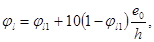
При расчете бетонных элементов, имеющих несмещаемые опоры, значения коэффициента η принимаются для сечения в средней трети длины элемента по формуле (9), а для сечений в пределах крайних третей длины элемента - путем линейной интерполяции, принимая в опорных сечениях значения η равными единице.
Таблица 16
|
Расчетная длина l0 |
|
|
Для стен, опирающихся вверху и внизу: |
|
|
а) при шарнирах на двух концах, независимо от величины смещения опор |
H |
|
б) при защемлении одного из концов и возможном смещении опор: |
|
|
для многопролетных зданий |
1,25H |
|
« однопролетных « |
1,5H |
Примечание. H - высота стены в пределах этажа за вычетом толщины плиты перекрытия.
3.7. Расчет сжатых бетонных элементов (при косом внецентренном сжатии) производится по формуле (1), при этом:
а) площадь сечения сжатой зоны бетона Аb условно принимается в виде прямоугольника, центр тяжести которого совпадает с точкой приложения силы и две стороны ограничены контуром сечения элемента (черт. 3), при этом:
Сb и Ch - расстояния от точки приложения силы до ближайших границ сечения.
Площадь условной сжатой зоны бетона равна:
Аb = 4(yh - е0х)(yb - е0у); (15)
б) влияние продольного изгиба учитывается в соответствии с п. 3.6, при этом величины η и δ определяются в двух вариантах:
1) при высоте сечения h и эксцентриситете е0х - в направлении h;
2) при высоте сечения h = b и эксцентриситете е0у - в направлении b.
Черт. 3. Схема расположения усилий и эпюра напряжений в поперечном сечении бетонного элемента при косом внецентренном сжатии
При двух вариантах значения h за расчетную несущую способность принимается меньшая из значений, вычисленных по формуле (1). Проверка несущей способности с учетом сопротивления бетона растянутой зоны в соответствующем направлении производится по формулам (3) и (4).
3.8 (3.7). Расчет элементов бетонных конструкций на местное сжатие (смятие) следует выполнять согласно пп. 3.30 - 3.31.
Расчет опорных сечений сжатых элементов конструкций в зонах, примыкающих к горизонтальным растворным швам, производится в соответствии с прил. 4.
Изгибаемые элементы
3.9 (3.8). Расчет изгибаемых бетонных элементов (см. черт. 2) должен производиться из условия
где a - коэффициент, принимаемый согласно п. 3.5;
Wpl - определяется по формуле (5); для элементов прямоугольного сечения принимается равным:
РАСЧЕТ ЖЕЛЕЗОБЕТОННЫХ ЭЛЕМЕНТОВ ПО ПРОЧНОСТИ
3.10. Расчет по прочности элементов железобетонных конструкций должен производиться для сечений, нормальных и наклонных к их продольной оси. При необходимости должен производиться расчет на местное смятие.
Расчет по прочности сечений, нормальных к продольной оси элемента
3.11 (3.10). Предельные усилия в сечении, нормальном к продольной оси элемента, следует определять исходя из следующих предпосылок:
сопротивление бетона растяжению принимается равным нулю;
сопротивление бетона сжатию представляется напряжениями, равными Rb, равномерно распределенными по сжатой зоне бетона;
растягивающие напряжения в арматуре принимаются не более расчетного сопротивления растяжению Rs;
сжимающие напряжения в арматуре принимаются не более расчетного сопротивления сжатию Rsc.
При наличии в элементе напрягаемой и ненапрягаемой арматуры из стали различных видов и классов каждый вид и класс арматуры вводят в расчет прочности со своими расчетными сопротивлениями. В этом случае в расчетных формулах произведения RsAs и RscA′s заменяют суммой произведений расчетных сопротивлений каждого вида арматуры на соответствующие площади их сечений, а произведения RsSs0 и RscS′so заменяют суммой произведений расчетных сопротивлений арматуры на статические моменты соответствующих площадей сечений арматуры.
Расчет двухслойных элементов по прочности при расположении слоя тяжелого бетона в растянутой зоне производится так же, как и для однослойных ячеистобетонных элементов; при расчете по деформациям прочность тяжелого бетона принимают равной его классу, указанному в проекте.
В таких элементах положение центра тяжести площади всего сечения бетона или его сжатой зоны, а также статические моменты следует определять, приводя все сечения к классу ячеистого бетона.
3.12 (3.11). Расчет сечений, нормальных к
продольной оси элемента, когда внешняя сила действует в плоскости оси симметрии
сечения и арматура сосредоточена у перпендикулярных к указанной плоскости
граней элемента, следует производить в зависимости от соотношения между
значением относительной высоты сжатой зоны бетона 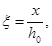
3.13 (3.12). Значение ξR определяется по формуле
где ω = a - bRb;
a = 0,8;
b = 0,008;
Rb - принимается в МПа.
ssR - напряжение в арматуре, МПа, принимаемое равным для арматуры классов:
A-I, А-II, А-III, А-IIIв и Bp-I ssR = Rs - ssp;
A-IV, A-V, A-VI ssR = Rs + 400 - ssp - Dssp;
B-II, Bp-II ssR = Rs + 400 - ssp;
здесь Rs - расчетное сопротивление арматуры растяжению с учетом соответствующих коэффициентов условий работы арматуры gsi, за исключением gs6 (см. п. 3.13 СНиП 2.03.01-84);
ssp - принимается при коэффициенте gsp < 1;
Dssp - см. п. 3.28 СНиП 2.03.0184.
При этом ξR должно быть не более 0,6.
3.14 (3.13). При расчете по прочности железобетонных элементов с высокопрочной арматурой классов A-IV, A-V, A-VI, B-II, Вр-II при соблюдении условия ξ £ ξR расчетное сопротивление арматуры Rs должно быть умножено на коэффициент условий работы gs6, определяемый в соответствии с п. 3.13 СНиП 2.03.01-84.
Изгибаемые элементы прямоугольного сечения
3.15 (3.15). Расчет прямоугольных
сечений изгибаемых элементов, указанных в п. 3.12 (черт. 4), при 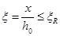
M £ Rbbx(h0 - 0,5x) + RscA′s(h0 - a′), (19)
при этом высота сжатой зоны х определяется по формуле
и принимается с учетом п. 3.16.
Расчет тавровых и двутавровых сечений производится в соответствии с п. 3.16 СНиП 2.03.01-84.
Черт. 4. Схема усилий и эпюра напряжений в сечении, нормальном к продольной оси изгибаемого железобетонного элемента, при расчете его по прочности
3.16 (3.17). При расчете по прочности изгибаемых элементов рекомендуется соблюдать условие
В случае, когда площадь сечения растянутой арматуры по конструктивным соображениям или из расчета по предельным состояниям второй группы принята большей, чем это требуется для соблюдения условия x £ ξRh0, расчет следует производить по формулам для общего случая (см. п. 3.21).
Если полученное из расчета по формуле (20) значение x > ξRh0, допускается производить расчет из условия (19), определяя высоту сжатой зоны из формулы
 ssAs - RscA′s
= Rbbx, (22)
ssAs - RscA′s
= Rbbx, (22)
где
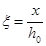
ssp - определяется при коэффициенте gsp, большем единицы.
Для элементов с ненапрягаемой арматурой классов A-I, A-II и А-III и Вр-I при x > ξRh0 допускается также производить расчет из условия (19), подставляя в него значение x = ξRh0.
Внецентренно сжатые элементы прямоугольного сечения
3.17 (3.19). При расчете внецентренно сжатых железобетонных элементов необходимо учитывать случайный начальный эксцентриситет, согласно п. 1.18, а также влияние прогиба на их несущую способность в соответствии с п. 3.19.
3.18 (3.20). Расчет прямоугольных сечений внецентренно сжатых элементов, указанных в п. 3.12, следует производить:
а) при (черт. 5) - из условия
Ne £ Rbbx(h0 - 0,5x) + RscA′s(h0 - а′), (24)
при этом высота сжатой зоны определяется из формулы
N + RsAs - RscA′s = Rbbx, (25)
б) при 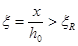
при этом высота сжатой зоны определяется:
для элементов с ненапрягаемой арматурой классов A-I, A-II, А-III - из формулы
N + ssAs - RscA′s = Rbbx, (26)
для элементов с арматурой классов выше А-III (ненапрягаемой и напрягаемой) - из формул (30) - (32).
Черт. 5. Схема и эпюра напряжений в сечении, нормальном к продольной оси внецентренно сжатого железобетонного элемента, при расчете его по прочности
3.19 (3.24). При расчете внецентренно сжатых элементов следует учитывать влияние прогиба на их несущую способность, как правило, путем расчета конструкций по деформированной схеме (см. п. 1.15 СНиП 2.03.01-84).
Допускается производить расчет конструкций
по недеформированной схеме, учитывая при гибкости 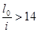
При этом условная критическая сила в формуле (9) для вычисления η определяется по формуле
где l0 - принимается в соответствии с п. 3.20;
δе - коэффициент, принимаемый согласно п. 3.6;
φl - коэффициент, определяемый по формуле (11); при этом моменты M и Ml определяются относительно оси, параллельной линии, ограничивающей сжатую зону и проходящей через центр наиболее растянутого или наименее сжатого (при целиком сжатом сечении) стержня арматуры, соответственно от действия полной нагрузки и от действия постоянных и длительных нагрузок. Если изгибающие моменты (или эксцентриситеты) от действия полной нагрузки и от действия постоянных и длительных нагрузок имеют разные знаки, следует учитывать указания п. 3.6.
При расчете из плоскости действия изгибающего момента эксцентриситет продольной силы е0 принимается равным величине случайного эксцентриситета (см. п. 1.18).
3.20 (3.25). Расчетные длины l0 внецентренно сжатых железобетонных элементов рекомендуется определять как для элементов рамной конструкции с учетом ее деформированного состояния при наиболее невыгодном для данного элемента расположении нагрузки, принимая во внимание неупругие деформации материалов и наличие трещин по табл. 16.
Общий случай расчета при любых сечениях, внешних усилиях и любом армировании
3.21 (3.28). Расчет сечений в общем случае (черт. 6) должен производиться из условия
В условии (29):
М - в изгибаемых элементах - проекция момента внешних сил на плоскость, перпендикулярную прямой, ограничивающей сжатую зону сечения; во внецентренно сжатых элементах - момент продольной силы N относительно оси, параллельной прямой, ограничивающей сжатую зону и проходящей через центр тяжести сечения наиболее растянутого или наименее сжатого стержня продольной арматуры;
Sb и Ssi - статические моменты площади сечения сжатой зоны бетона и i-го стержня продольной арматуры относительно соответствующей из указанных выше осей (в изгибаемых элементах положение этой оси принимается таким же, как и во внецентренно сжатых);
ssi - напряжение в i-м стержне продольной арматуры, определяемое согласно указаниям настоящего пункта.
Черт. 6. Схема усилий и эпюра напряжений в сечении, нормальном к продольной оси железобетонного элемента, в общем случае расчета по прочности
I-I - плоскость, параллельная плоскости действия изгибающего момента
1 - точка приложения равнодействующей усилий в сжатой арматуре и в бетоне сжатой зоны; 2 - точка приложения равнодействующей усилий в растянутой арматуре
Высота сжатой зоны х и напряжение ssi определяются из совместного решения уравнений:
sspi - предварительное напряжение в i-м стержне продольной арматуры, принимаемое при коэффициенте gsp, назначаемом в зависимости от расположения стержня.
Asi - площадь сечения i-го стержня продольной арматуры;
ξi - относительная высота сжатой зоны бетона,
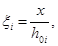
где hoi - расстояние от оси, проходящей через центр тяжести сечения рассматриваемого i-го стержня арматуры и параллельной прямой, ограничивающей сжатую зону до наиболее удаленной точки сжатой зоны сечения (см. черт. 6);
ω - характеристика сжатой зоны ячеистого бетона, определяемая по формуле (18);
Кроме того, для определения положения границы сжатой зоны при косом изгибе требуется соблюдение дополнительного условия параллельности плоскости действия моментов внешних и внутренних сил, а при косом внецентренном сжатии - условия, чтобы точки приложения внешней продольной силы, равнодействующей сжимающих усилий в бетоне и арматуре и равнодействующей усилий в растянутой арматуре, лежали на одной прямой (см. черт. 6).
Если значение ssi, полученное по формуле (30), для арматуры классов A-IV, A-V, B-II, Вр-II превышает bRsi, то напряжение ssi - следует определять по формуле
где ξRi и ξeli - относительная высота сжатой зоны, отвечающая достижению в рассматриваемом стержне напряжений, соответственно равных Rsi и βRsi, значения ξRi и ξeli определяются по формуле
Здесь ssRi = Rsi + 400 - sspi - Dsspi, МПа - при определении ξRi;
ss,eli = βRsi - sspi, МПа - при определении ξeli;
ssc,u - см. п. 3.22 СНиП 2.03.01-84.
Значения Dsspi и коэффициента β принимаются в соответствии с п. 3.28 СНиП 2.03.01-84.
В случае, когда напряжение в арматуре, найденное по формуле (32), превышает Rsi без учета коэффициента gs6, в условия (29) и (30) подставляется значение ssi, равное Rsi, с учетом соответствующих коэффициентов условий работы, в том числе gs6 (см п. 3.13 СНиП 2.03.01-84).
Напряжение ssi вводится в расчетные формулы со своим знаком, полученным при расчете по формулам (31) и (32), при этом необходимо соблюдать следующие условия:
во всех случаях Rsj ³ ssi ³ -Rsci;
для предварительно напряженных элементов ssi ³ ssci, здесь ssci - напряжение в арматуре, равное предварительному напряжению s′spi, уменьшенному на величину ssc,и (см. пп. 3.12, 3.22 СНиП 2.03.01-84).
Расчет по прочности сечений, наклонных к продольной оси элемента
3.22 (3.29). Расчет железобетонных элементов из ячеистых бетонов по наклонным сечениям должен производиться для обеспечения прочности:
на действие поперечной силы по наклонной полосе между наклонными трещинами (п. 3.23);
на действие поперечной силы по наклонной трещине (п. 3.24);
на действие изгибающего момента по наклонной трещине (п. 3.26).
3.23 (3.30). Расчет железобетонных элементов на действие поперечной силы для обеспечения прочности по наклонной полосе между наклонными трещинами должен производиться из условия
Коэффициент φw1, учитывающий влияние хомутов, нормальных к продольной оси элемента, определяется по формуле
φw1 = 1 + 0,5aμw, но не более 1,3, (35)
где
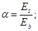 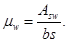
s - расстояние между хомутами, измеренное по нормали к ним.
Коэффициент φb1 определяется по формуле
где Rb - в МПа.
3.24 (3.31). Расчет железобетонных элементов из ячеистых бетонов с поперечной арматурой (черт. 7) на действие поперечной силы для обеспечения прочности по наклонной трещине должен производиться по наиболее опасному наклонному сечению из условия
Черт. 7. Схема усилий в сечении, наклонном к продольной оси железобетонного элемента, при расчете его по прочности на действие поперечной силы
Поперечная сила Q в условии (37) определяется от внешней нагрузки, расположенной по одну сторону от рассматриваемого наклонного сечения.
Поперечное усилие Qb, воспринимаемое бетоном, определяется по формуле
где с - длина проекции наиболее опасного наклонного сечения на продольную ось элемента.
Коэффициент φn, учитывающий влияние продольных сил, определяется по формуле:
при действии продольных сжимающих сил
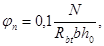
Для предварительно напряженных элементов в формулу (39) вместо N подставляется усилие предварительного обжатия Р; положительное влияние продольных сжимающих сил не учитывается, если они создают изгибающие моменты, одинаковые по знаку с моментами от действия поперечной нагрузки; значение 1 + jn во всех случаях принимается не более 1,5.
Значение Qb, вычисленное по формуле (38), принимается не менее величины 0,6(1 + jn)Rbtbh0.
При расчете железобетонных элементов с поперечной арматурой должна быть также обеспечена прочность по наклонному сечению в пределах участка между хомутами, опорой и отгибом и отгибами (черт. 8).
Черт. 8. Расстояния между хомутами и отогнутыми стержнями
Поперечные усилия Qsw и Qs,inc определяются как сумма проекций на нормаль к продольной оси элемента предельных усилий соответственно в хомутах и отгибах, пересекающих опасную наклонную трещину.
Длина с0 проекции опасной наклонной трещины на продольную ось элемента определяется из минимума выражения Qb + Qsw + Qs,inc, где в значение Qb вместо с подставляется с0; полученное значение с0 принимается не более 2h0 и не более значения с, а также не менее h0, если с > h0.
Для элементов с поперечной арматурой в виде хомутов, нормальных к продольной оси элемента и имеющих постоянный шаг в пределах рассматриваемого наклонного сечения, значение с0 соответствует минимуму усилия Qb + Qsw и определяется по формуле
где qsw - усилие в хомутах на единицу длины элемента, определяемое по формуле
Для таких элементов поперечное усилие Qsw определяется по формуле
При этом для хомутов, устанавливаемых по расчету, следует соблюдать условие
Кроме того, поперечная арматура должна удовлетворять требованиям пп. 5.12 - 5.17.
3.25 (3.32). Расчет железобетонных элементов без поперечной арматуры на действие поперечной силы для обеспечения прочности по наклонной трещине должен производиться по наиболее опасному наклонному сечению из условия
где правая часть условия (44) принимается не более 2,5Rbtbh0 и не менее 0,6(1 + jn)Rbtbh0.
Коэффициент jn определяется согласно п. 3.24.
3.26 (3.35). Расчет железобетонных элементов на действие изгибающего момента (черт. 9) для обеспечения прочности по наклонной трещине должен производиться по опасному наклонному сечению из условия
Момент М в условии (45) определяется от внешней нагрузки, расположенной по одну сторону от рассматриваемого наклонного сечения относительно оси, перпендикулярной плоскости действия момента и проходящей через точку приложения равнодействующей усилий Nb в сжатой зоне.
Моменты Ms, Msw и Ms,inc определяются соответственно как сумма моментов относительно той же оси от усилий в продольной арматуре в хомутах и отогнутых стержнях, пересекающих растянутую зону наклонного сечения, и вычисляются по формулам:
где zs, zsw и zs,inc - расстояния от плоскостей расположения соответственно продольной арматуры, хомутов и отогнутых стержней до указанной выше оси.
Высота сжатой зоны наклонного сечения определяется из условия равновесия проекций усилий в бетоне сжатой зоны и в арматуре, пересекающей растянутую зону наклонного сечения на продольную ось элемента.
Расчет наклонных сечений на действие момента производится в приопорных участках и местах резкого изменения размеров элементов (подрезки, узлы и т.д.), а также в местах обрыва или отгиба продольной арматуры.
Для конструкций из ячеистых бетонов усилия в продольной арматуре за наклонной трещиной должны определяться по расчету только с учетом работы поперечных анкеров на приопорных участках.
Момент Msw, воспринимаемый хомутами, нормальными к продольной оси элемента, с равномерным шагом в пределах растянутой зоны рассматриваемого наклонного сечения, определяется по формуле
где qsw - усилие в хомутах на единицу длины элемента, определяемое по формуле (41);
с - длина проекции опасного наклонного сечения на продольную ось элемента.
Черт. 9. Схема усилий в сечении, наклонном к продольной оси железобетонного элемента, при расчете его по прочности на действие изгибающего момента
3.27. Концы продольной арматуры железобетонных элементов должны быть заанкерены (см. п. 3.35 СНиП 2.03.01-84). Анкеровка продольной арматуры железобетонных конструкций из ячеистых бетонов определяется расчетом.
Значение расчетного усилия Nan, воспринимаемого анкерными поперечными стержнями, приваренными к продольным стержням ненапрягаемой арматуры в однородных элементах, вычисляется по формуле
(50)
где па - число анкерных поперечных стержней, принимаемое с учетом п. 5.10;
da - диаметр анкерных поперечных стержней, см;
тb - коэффициент, учитывающий вид бетона; принимается: для автоклавных - 1; для неавтоклавных - 0,9;
msp - коэффициент, учитывающий вид арматуры; принимается: для гладкой арматуры - 2; для арматуры периодического профиля - 2,5;
gs9 - коэффициент, учитывающий вид антикоррозионной обмазки по табл. 14;
at - расстояние от оси опоры до первой наклонной трещины, определяемое согласно п. 3.28;
и - периметр продольного стержня;
пp - число анкеруемых продольных стержней в поперечном сечении элемента.
Примечания: 1. Число расчетных анкерных поперечных стержней, расположенных в одной плоскости, должно быть не более четырех, а расстояние между анкерными стержнями в свету не менее 50 мм.
2. В конструкциях балочного типа, армированных вертикальными каркасами (когда поперечные анкерные стержни расположены вертикально), величину расчетного усилия, воспринимаемого анкерами, определяют по формуле (50) настоящего Пособия и умножают его на коэффициент 0,6.
3. Усилие, воспринимаемое горизонтально расположенными анкерами, при условии соблюдения требований примеч. 1 принимают пропорционально их числу в том случае, если расстояние от начала наклонной трещины до оси близлежащего анкера не менее 100 мм. Если расстояние будет меньше 100 мм, но не менее 50 мм, усилие, воспринимаемое ближайшим к наклонной трещине анкером, умножают на коэффициент 0,6.
4. Усилия, воспринимаемые анкерами, приваренными к стержням, расположенным у боковой грани на расстоянии защитного слоя от нее, определяются по формуле (50) с введением коэффициента 0,5.
3.28. Начало наиболее опасного наклонного сечения принимают на расстоянии at от оси опоры (см. черт. 9) и вычисляют по формуле
(51)
где Мрl - момент появления трещин, определяемый с учетом сжатой и растянутой арматуры для опорного сечения по формуле (62);
Q - расчетная поперечная сила, определяемая в сечении на расстоянии at от опоры. Допускается принимать максимальное значение величины Q, соответствующее опорному сечению.
Конец наиболее опасного (по изгибающему моменту) наклонного сечения определяется проекцией длины этого сечения на продольную ось элемента (величиной ст), которую находят из уравнения
(52)
При поперечных стержнях, равномерно распределенных вдоль оси элемента, проекцию длины наиболее опасного наклонного сечения на ось элемента ст определяют по формуле
(53)
где qsw - определяют по формуле (41).
При равномерно распределенной нагрузке конец наиболее опасного наклонного сечения должен располагаться не далее 1/4 пролета от оси опоры (т.е. ) с тем, чтобы момент внешних сил М в формуле (45) не превышал максимального изгибающего момента
При сосредоточенной нагрузке конец наиболее опасного наклонного сечения должен располагаться так, чтобы момент внешних сил в формуле (45) не превышал максимального изгибающего момента для данного элемента.
При отсутствии поперечной арматуры, устанавливаемой по расчету, момент внешних сил принимают равным максимальному изгибающему моменту.
3.29. Для двухслойных элементов должна быть проверена прочность по наклонным сечениям от сдвига слоя плотного бетона относительно слоя ячеистого бетона по формуле
где b - ширина площади сопряжения двух слоев бетона в сечении элемента, в котором определяют прочность на сдвиг;
Rbt - расчетное сопротивление ячеистого бетона на растяжение, принимаемое по табл. 7 (в зависимости от его класса по прочности на сжатие, но не более 0,15 МПа (1,5 кгс/см2).
Расчет железобетонных элементов на местное действие нагрузки
3.30 (3.39). При расчете на местное сжатие (смятие) элементов без поперечного армирования должно удовлетворяться условие
где N - продольная сжимающая сила от местной нагрузки;
ψ - коэффициент, зависящий от характера распределения местной нагрузки по площади смятия и принимаемый равным: при равномерном распределении местной нагрузки на площади смятия - 1,0; при неравномерном распределении местной нагрузки на площади смятия (под концами балок, прогонов, перемычек) - 0,5;
Aloc1 - площадь смятия;
Rb,loc - расчетное сопротивление ячеистого бетона смятию, определяемое по формуле
но не более следующих значений: при схеме приложения нагрузки по черт. 10, а, в, г, е - 1,2; при схеме приложения нагрузки по черт. 10, б, д - 1,0;
Rb - принимается как для бетонных конструкций (см. п. 2.11 и табл. 6);
Аlос2 - расчетная площадь смятия, определяемая в соответствии с п. 3.31.
Черт. 10. Расчетные схемы, принятые при расчете на местное сжатие
а - е - различные случаи местного сжатая; 1 - площадь смятия; 2 - расчетная площадь смятия; 3 - расчетная площадь смятия, учитываемая только при наличии косвенной арматуры
3.31 (3.40). В расчетную площадь Aloc2 включается участок, симметричный по отношению к площади смятия (см. черт. 10). При этом должны выполняться следующие условия:
при местной нагрузке по всей ширине элемента b в расчетную площадь включается участок длиной не более b в каждую сторону от границы местной нагрузки (см. черт. 10, а);
при местной краевой нагрузке по всей ширине элемента расчетная площадь Аlос2 равна площади смятия Аloc1 (см. черт. 10, б);
при местной нагрузке в местах опирания концов прогонов и балок в расчетную площадь включается участок шириной, равной глубине заделки прогона или балки, и длиной не более расстояния между серединами пролетов, примыкающих к балке (см. черт. 10, в);
если расстояние между балками превышает двойную ширину элемента, длина расчетной площади определяется как сумма ширины балки и удвоенной ширины элемента (см. черт. 10, г);
при местной краевой нагрузке на угол элемента (см. черт. 10, д) расчетная площадь Аloc2 равна площади смятия Aloc1;
при местной нагрузке, приложенной на части длины и ширины элемента, расчетная площадь принимается согласно черт. 10, е. При наличии нескольких нагрузок указанного типа расчетные площади ограничиваются линиями, проходящими через середину расстояний между точками приложения двух соседних нагрузок.
Примечание. При местной нагрузке от балок, прогонов, перемычек и других элементов, работающих на изгиб, учитываемая в расчете глубина опоры при определении Аloc1 и Аloc2 принимается не более 20 см.
4. РАСЧЕТ ЭЛЕМЕНТОВ ЖЕЛЕЗОБЕТОННЫХ КОНСТРУКЦИЙ ПО ПРЕДЕЛЬНЫМ СОСТОЯНИЯМ ВТОРОЙ ГРУППЫ
РАСЧЕТ ЖЕЛЕЗОБЕТОННЫХ ЭЛЕМЕНТОВ ПО ОБРАЗОВАНИЮ ТРЕЩИН
4.1. Железобетонные элементы из ячеистых бетонов рассчитываются по образованию трещин, нормальных к продольной оси элемента.
4.2. Расчет по образованию трещин железобетонных элементов из ячеистых бетонов производится в соответствии с пп. 4.2 - 4.9 СНиП 2.03.01-84.
При определении момента трещинообразования по формуле (125) СНиП 2.03.01-84 допускается определять момент сопротивления приведенного сечения по формуле
где g - коэффициент, принимаемый по табл. 3 прил. 3;
Wred - момент сопротивления приведенного сечения, определяем по формуле
(59)
здесь у - расстояние от центра тяжести приведенного сечения до растянутого краевого волокна;
Ired - приведенный момент инерции с учетом продольной напрягаемой и ненапрягаемой арматуры, который может быть определен по формуле
(60)
где i - коэффициент, принимаемый по графикам черт. 1 и 2 прил. 3 в зависимости от коэффициентов:
(61)
Для однородных элементов прямоугольного сечения без предварительного напряжения момент трещинообразования может быть определен по формуле
где Wpl - коэффициент, принимаемый по графикам черт. 3 и 4 прил. 3 в зависимости от характеристик армирования a2 и
(63)
РАСЧЕТ ЖЕЛЕЗОБЕТОННЫХ ЭЛЕМЕНТОВ ПО РАСКРЫТИЮ НОРМАЛЬНЫХ К ПРОДОЛЬНОЙ ОСИ ТРЕЩИН
4.3. Железобетонные элементы из ячеистых бетонов рассчитываются по раскрытию трещин, нормальных к продольной оси элемента.
4.4 (4.14). Ширину раскрытия трещин, нормальных к продольной оси элемента аcrc, мм, следует определять по формуле
(64)
где φl - коэффициент, принимаемый равным при учете:
кратковременных нагрузок и непродолжительного действия постоянных и длительных нагрузок - 1;
продолжительного действия постоянных и длительных нагрузок - 2,5;
η - коэффициент, принимаемый равным:
при стержневой арматуре периодического профиля - 1,0;
« стержневой арматуре гладкой - 1,3;
« проволочной арматуре периодического профиля - 1,2;
« проволочной гладкой арматуре - 1,4;
ss - напряжение в стержнях крайнего ряда арматуры S или (при наличии предварительного напряжения) приращение напряжений от действия внешней нагрузки, определяемое согласно п. 4.5;
μ - коэффициент армирования сечений, принимаемый равным отношению площади сечения арматуры S к площади сечения бетона (при рабочей высоте h0), но не более 0,02;
d - диаметр стержня арматуры, мм.
Для элементов, к трещиностойкости которых предъявляются требования 2-й категории, ширина раскрытия трещин определяется от суммарного действия постоянных, длительных и кратковременных нагрузок при коэффициенте φl = 1.
Для элементов, к трещиностойкости которых предъявляются требования 3-й категории, ширина продолжительного раскрытия трещин определяется от действия постоянных и длительных нагрузок при коэффициенте φl > 1. Ширина непродолжительного раскрытия трещин определяется как сумма ширины продолжительного раскрытия и приращения ширины раскрытия от действия кратковременных нагрузок, определяемых при коэффициенте φl = 1.
Ширина раскрытия трещин, определенная по формуле (64), корректируется в следующих случаях:
а) если центр тяжести сечения стержней крайнего ряда арматуры S изгибаемых, внецентренно сжатых элементов при е0,tot ³ 0,8h0 отстоит от наиболее растянутого волокна на расстоянии а2, большем 0,2h, значение аarc должно быть увеличено путем умножения на коэффициент δа, равный
(65)
и принимаемый не более 3.
4.5 (4.15). Напряжения в растянутой арматуре (или приращения напряжений) as должны определяться по формулам для элементов:
изгибаемых
(66)
внецентренно сжатых при e0,tot ³ 0,8h0
(67)
z - расстояние от центра тяжести площади сечения арматуры S до точки приложения равнодействующей усилий в сжатой зоне сечения над трещиной, определяемое согласно п. 4.7.
При расположении растянутой арматуры в несколько рядов по высоте сечения в изгибаемых и внецентренно сжатых элементах при е0,tot ³ 0,8h0 напряжения ss, подсчитанные по формулам (66) и (67), должны умножаться на коэффициент δn, равный
(68)
где х = ξh0; значение ξ определяется по формуле (70);
а1 и а2 - расстояния от центра тяжести площади сечения соответственно всей арматуры S и крайнего ряда стержней до наиболее растянутого волокна бетона.
Значение напряжения ss + ssp, а при многорядной растянутой арматуре δnss + ssp не должно превышать Rs,ser.
РАСЧЕТ ЭЛЕМЕНТОВ ЖЕЛЕЗОБЕТОННЫХ КОНСТРУКЦИЙ ПО ДЕФОРМАЦИЯМ
Определение кривизны железобетонных элементов на участках без трещин в растянутой зоне
4.6. Расчет элементов железобетонных конструкций из ячеистых бетонов по деформациям на участках без трещин должен производиться с учетом указаний пп. 4.23 - 4.26 СНиП 2.03.01-84.
Определение кривизны железобетонных элементов на участках с трещинами в растянутой зоне
4.7 (4.27). На участках, где в растянутой зоне образуются нормальные к продольной оси элемента трещины, кривизны изгибаемых и внецентренно сжатых элементов прямоугольного сечения должны определяться по формуле
(69)
В формуле (69):
М - момент относительно оси, нормальной к плоскости действия момента и проходящей через центр тяжести площади сечения арматуры S, от всех внешних сил, расположенных по одну сторону от рассматриваемого сечения, и от усилия предварительного обжатия Р;
z - расстояние от центра тяжести площади сечения арматуры s до точки приложения равнодействующей усилий в сжатой зоне сечения над трещиной, определяемое по указаниям п. 4.8;
ψs - коэффициент, учитывающий работу растянутого бетона на участке с трещинами и определяемый согласно п. 4.8;
v - коэффициент, характеризующий упругопластическое состояние бетона сжатой зоны и принимаемый по табл. 17;
ψb - коэффициент, учитывающий неравномерность распределения крайнего сжатого волокна бетона по длине участка с трещинами и принимаемый равным 0,7;
φf - коэффициент, определяемый по формуле (72);
ξ - относительная высота сжатой зоны бетона, определяемая согласно указаниям п. 4.8;
Ntot - равнодействующая продольной силы N и усилия предварительного обжатия Р. Для элементов, выполняемых без предварительного напряжения, усилие Р принимается равным нулю.
4.8 (4.28). Значение ξ вычисляется по формуле
(70)
но принимается не более 1.
В формуле (70):
(71)
(72)
(73)
es,tot - эксцентриситет силы Ntot относительно центра тяжести площади сечения арматуры S, соответствует заменяющему моменту М (п. 4.7) и определяется по формуле
(74)
Значение z вычисляется по формуле
(75)
Для внецентренно сжатых элементов величина z должна приниматься не более 0,97es,tot.
Таблица 17
|
Элементы конструкций |
Коэффициенты, учитывающие влияние ползучести ячеистых бетонов на деформации элементов |
||
|
без трещин φb2 |
с трещинами v |
||
|
1. Непродолжительное действие |
Все виды элементов |
1 |
0,45 |
|
2. Продолжительное действие при влажности окружающей среды, %: |
|||
|
а) 40 - 75 |
Элементы без вентилируемых каналов |
2 |
0,2* |
|
Элементы с вентилируемыми каналами |
3 |
0,1 |
|
|
б) ниже 40 |
Элементы без вентилируемых каналов |
2,5 |
0,15 |
|
Элементы с вентилируемыми каналами |
3 |
0,1 |
|
* Допускается повышать значения коэффициента v и снижать значение коэффициента при продолжительном действии нагрузки и влажности окружающей среды 50 % и выше:
для элементов без вентилируемых каналов ν - не более 0,26;
 - не менее 1,5;
- не менее 1,5;
« « с вентилируемыми каналами ν - не более 0,2;
 -
не менее 2.
-
не менее 2.
Примечание. Для конструкций, подвергаемых усиленной карбонизации (животноводческие здания) при влажности окружающей среды выше 60 %, значения коэффициентов v и принимаются соответственно не более 0,1 и не менее 3.
4.9 (4.29). Значение коэффициента ψs для двухслойных предварительно напряженных элементов конструкций определяется по формуле
(76)
но принимается не более 1; при этом следует принимать величину
Для изгибаемых элементов, выполняемых без предварительного напряжения арматуры, последний член в правой части формулы (76) допускается принимать равным нулю.
В формуле (76):
jls - коэффициент, учитывающий влияние длительности действия нагрузки и принимаемый по табл. 36 СНиП 2.03.01-84;
es,tot - см. формулу (74);
(77)
но не более 1.
Здесь Wpl - см. формулу (138) СНиП 2.03.01-84, допускается принимать по формуле (58);
Мr и Мrp - см. п. 4.5 СНиП 2.03.01-84 и п. 4.2, при этом за положительные принимаются моменты, вызывающие растяжение в арматуре S.
Для однослойных конструкций из ячеистого бетона (без предварительного напряжения) значение ψs вычисляется по формуле
(78)
jl - коэффициент, принимаемый равным:
при непродолжительном действии нагрузки для арматуры:
периодического профиля - 0,6;
гладкой - 0,7;
при продолжительном действии нагрузки независимо от профиля арматуры - 0,8.
Mser - момент, воспринимаемый сечением элемента из расчета по прочности при расчетных сопротивлениях арматуры и бетона для предельных состояний второй группы.
4.10 (4.30). Полная кривизна для участка с трещинами в растянутой зоне должна определяться по формуле
(79)
где - кривизна от непродолжительного действия всей нагрузки, на которую производится расчет по деформациям согласно указаниям п. 1.20 СНиП 2.03.01-84;
- кривизна от непродолжительного действия постоянных и длительных нагрузок;
- кривизна от продолжительного действия постоянных и длительных нагрузок;
- кривизна, обусловленная выгибом элемента вследствие усадки и ползучести бетона от усилия предварительного обжатия и определяемая по формуле (158) с учетом указаний п. 4.25 СНиП 2.03.01-84.
Кривизны , и определяются по формуле (69), при этом и вычисляют при значениях ψs и ν, отвечающих непродолжительному действию нагрузки, а - при значениях ψs и v, отвечающих продолжительному действию нагрузки. Если значения и оказываются отрицательными, то они принимаются равными нулю.
Определение прогибов
4.11 (4.31). Прогиб fm, обусловленный деформацией изгиба, определяется по формулам:
(80)
(81)
где  - изгибающий момент в сечении x от действия единичной силы, приложенной по
направлению искомого перемещения элемента в сечении x по длине пролета, для которого определяется прогиб;
- изгибающий момент в сечении x от действия единичной силы, приложенной по
направлению искомого перемещения элемента в сечении x по длине пролета, для которого определяется прогиб;
- полная кривизна элемента в сечении x от нагрузки, при которой определяется прогиб; значения определяются по формуле (79), знак принимается в соответствии с эпюрой кривизны;
mf - коэффициент, зависящий от характера загружения, принимаемый по табл. 4 прил. 3;
l - расчетный пролет изгибаемого элемента.
Для изгибаемых элементов постоянного сечения без предварительного напряжения арматуры, имеющих трещины на каждом участке, в пределах которого изгибающий момент не меняет знака, кривизну допускается вычислять для наиболее напряженного сечения, принимая кривизну для остальных сечений такого участка изменяющейся пропорционально значениям изгибающего момента.
5. КОНСТРУКТИВНЫЕ ТРЕБОВАНИЯ
5.1 (5.1). При проектировании бетонных и железобетонных конструкций для обеспечения условий их изготовления, требуемой долговечности и совместной работы арматуры и бетона надлежит выполнять конструктивные требования, изложенные в настоящем разделе.
МИНИМАЛЬНЫЕ РАЗМЕРЫ СЕЧЕНИЯ ЭЛЕМЕНТОВ
5.2 (5.2). Минимальные размеры сечений бетонных и железобетонных элементов из ячеистых бетонов, определяемые из расчета по действующим усилиям и соответствующим группам предельных состояний, должны назначаться с учетом экономических требований, необходимости унификации опалубочных форм и армирования, а также условий принятой технологии изготовления конструкций.
Кроме того, размеры сечения элементов железобетонных конструкций должны приниматься такими, чтобы соблюдались требования в части расположения арматуры в сечении (толщины защитных слоев бетона, расстояния между стержнями и т.п.) и анкеровки арматуры.
5.3 (5.3). Минимальная толщина сборных железобетонных плит из ячеистых бетонов должна определяться из условия обеспечения требований к расположению арматуры по толщине плиты и соблюдения требуемой толщины защитных слоев бетона согласно п. 5.5.
Гибкость l0/i сжатых бетонных и железобетонных элементов из ячеистых бетонов следует принимать не более 70.
При проектировании конструкций из ячеистых бетонов необходимо избегать резкого изменения размеров сечений элементов, образования гнезд, четвертей, а если же они неизбежны, то все входящие углы должны быть армированы.
ЗАЩИТНЫЙ СЛОЙ БЕТОНА
5.4 (5.4). Защитный слой бетона для рабочей арматуры должен обеспечивать совместную работу арматуры с бетоном на всех стадиях работы конструкций, а также защиту арматуры от внешних атмосферных, температурных и т.п. воздействий.
5.5. Толщина защитного слоя бетона принимается в соответствии с п. 5.5 СНиП 2.03.01-84 не менее диаметра рабочей арматуры и не менее, мм:
25 - для продольной рабочей арматуры в однослойных элементах конструкций и 15 - в двухслойных плитах толщиной больше 100 мм при расположении рабочей арматуры в слое тяжелого бетона, а также для арматуры внутренних перегородок при средней плотности ячеистого бетона более 1000 кг/м3;
15 - для поперечных стержней сварных каркасов плит перекрытий и стеновых панелей;
10 - для анкерной арматуры;
В изгибаемых и внецентренно сжатых элементах концы продольных стержней ненапрягаемой арматуры должны отстоять от торца элемента не более чем на 10 мм.
5.6. Толщина защитного слоя бетона для предварительно напряженных двухслойных элементов из ячеистого бетона на участке зоны передачи усилий от арматуры на бетон принимается в соответствии с пп. 5.7 и 5.8 СНиП 2.03.01-84.
МИНИМАЛЬНЫЕ РАССТОЯНИЯ МЕЖДУ СТЕРЖНЯМИ АРМАТУРЫ
5.7 (5.11). Расстояния в свету между стержнями арматуры по высоте и ширине сечения должны обеспечивать совместную работу арматуры с бетоном и назначаться с учетом удобства укладки и уплотнения бетонной смеси; для предварительно напряженных конструкций должны также учитываться степень местного обжатия бетона и габариты натяжного оборудования (домкратов, зажимов и т.п.), а также возможность обеспечения прохождения штыковых вибраторов.
Минимальное расстояние в свету между стержнями продольной сжатой арматуры и продольной растянутой арматуры принимается не менее трех диаметров и не менее 50 мм.
При стесненных условиях допускается располагать стержни арматуры попарно (без зазора между ними) таким образом, чтобы при бетонировании горизонтальные спаренные стержни находились один над другим.
Примечание. Расстояние в свету между стержнями периодического профиля принимается по номинальному диаметру без учета выступов и ребер.
5.8. Расстояние между поперечными анкерными стержнями в свету принимается не менее 50 мм; расстояние от начала опасной наклонной трещины до ближайшего расчетного анкерного (поперечного) стержня принимается не менее 100 мм (черт. 11).
Черт. 11. Примеры анкеровки арматуры плит из ячеистого бетона на опорах растянутых стержней
а - вариант, при котором два или большее число расчетных анкерующих стержней, располагающихся в пределах опорного участка, приваривают с одной стороны продольных рабочих стержней; б - вариант, при котором эти же анкерующие стержни привариваются с двух сторон продольных рабочих стержней; 1 - расчетные анкерующие стержни; 2 - наклонная трещина
АНКЕРОВКА АРМАТУРЫ
5.9. Анкеровка арматуры, расположенной в тяжелом слое бетона двухслойных элементов конструкций, производится в соответствии с пп. 5.13 - 5.15 СНиП 2.03.01-84.
Анкеровка рабочей арматуры, расположенной в однослойных элементах конструкций, производится с помощью приваренных к ней поперечных стержней.
Число и диаметр анкерующих поперечных стержней определяется расчетом в соответствии с требованиями, изложенными в пп. 3.27 - 3.28.
Найденное по расчету число анкерующих поперечных стержней размещается на участках от торца элемента до начала наиболее опасного наклонного сечения (см. черт. 11).
При этом расстояние между поперечными стержнями устанавливается в соответствии с п. 5.8, а расстояние от конца анкеруемых стержней до первого поперечного стержня принимается не более 10 мм.
В пределах опорного участка изгибаемых элементов (за гранью опоры) располагается не менее двух расчетных поперечных стержней.
Длина опорного участка изгибаемых элементов принимается не менее 1/100 их длины и не менее 7 см.
Если по расчету установка поперечных анкерных стержней не требуется, то по конструктивным требованиям к каждому продольному стержню приваривается хотя бы один поперечный анкерный стержень.
При невозможности выполнить условия настоящего пункта, а также для повышения степени надежности заделки концов растянутых рабочих стержней (если это требуется по расчету) на их концах предусматриваются специальные анкеры, устанавливаемые по расчету на смятие бетона под анкерами.
5.10 (5.15). Для обеспечения анкеровки всех продольных стержней арматуры, заводимых за грань опоры, на крайних свободных опорах изгибаемых элементов должны выполняться следующие требования:
а) если соблюдается условие (44), длина запуска растянутых стержней за внутреннюю грань свободной опоры должна составлять не менее 5d и не менее 7 см;
б) если условие (44) не соблюдается, длина запуска стержней за внутреннюю часть свободной опоры должна быть не менее 10d.
При расположении арматуры в тяжелом слое бетона двухслойных конструкций длина зоны анкеровки lan определяется согласно п. 5.14 СНиП 2.03.01-84.
5.11. У концов предварительно напряженных двухслойных элементов должна быть установлена конструктивная поперечная арматура, охватывающая все напрягаемые стержни и выполненная в виде отдельных стержней или сеток корытообразной формы.
Площадь сечения поперечной арматуры должна составлять не менее 2 % площади напрягаемой арматуры на длине 2lp, но не менее 50 см от грани опоры.
ПРОДОЛЬНОЕ АРМИРОВАНИЕ ЭЛЕМЕНТОВ
5.12. Для армирования элементов конструкций из ячеистого бетона ненапрягаемой арматурой должна предусматриваться только сварная арматура в виде плоских сеток или объемных каркасов. Арматура в виде отдельных стержней или вязаных каркасов допускается к применению для работы на местные усилия (например, в углах проемов и т.п.). Устройство крюков на концах рабочих стержней не рекомендуется.
5.13. Минимальный процент продольной рабочей арматуры (в процентах от площади сечения бетона) железобетонных конструкций из ячеистого бетона принимается в соответствии с п. 5.16 и табл. 38 СНиП 2.03.01-84 и не менее:
для продольной арматуры S в изгибаемых и внецентренно сжатых элементах при расчете на основные нагрузки - 0,05;
то же, при расчете по прочности в своей плоскости, а также на собственный вес при распалубке и монтаже - 0,03;
для конструктивной арматуры S и S′, устанавливаемой без расчета в сжатых и изгибаемых элементах - 0,02.
Число стержней сжатой и растянутой рабочей арматуры в плитах должно быть не менее трех на 1 м ширины плиты. Сжатая арматура, вводимая в расчет элементов из ячеистого бетона классов В5 и ниже, принимается диаметром не менее 6 мм.
5.14. В соответствии с п. 5.17 СНиП 2.03.01-84 в однослойных элементах из ячеистого бетона максимальный диаметр рабочей арматуры не должен превышать, мм: 16 - при бетоне классов В10 и ниже и 20 - при бетоне классов В12,5 и выше.
ПОПЕРЕЧНОЕ АРМИРОВАНИЕ ЭЛЕМЕНТОВ
5.15 (5.22). У всех поверхностей железобетонных элементов, вблизи которых ставится продольная арматура, предусматривается также поперечная арматура, охватывающая крайние продольные стержни.
Расстояние между стержнями поперечной арматуры, устанавливаемой конструктивно параллельно поверхностям плит и между поперечной арматурой в виде вертикальных хомутов в плитах и панелях, должно быть не более 600 мм и не более удвоенной ширины грани элемента.
В стеновых панелях высотой более 600 мм допускается увеличивать расстояние между конструктивными вертикальными стержнями в центре пролета (на расстояние 1/4 от опор) до 1200 мм.
При армировании элементов каркасами-лесенками расстояние между поперечными конструктивными стержнями в каркасах должно быть не более удвоенной высоты поперечного стержня, не более 500 мм и не более 40d.
5.16. Расстояние между стержнями поперечной арматуры, определяемое расчетом на поперечную силу, устанавливается в соответствии с этим расчетом, но не менее указанного в п. 5.15.
5.17. В двухслойных ячеистобетонных элементах поперечную арматуру, устанавливаемую на сдвиг между двумя слоями, рекомендуется выполнять вертикальной в случае профилированной (ребристой) поверхности сопряжения нижнего железобетонного слоя и наклонной в случае гладкой поверхности сопряжения.
СВАРНЫЕ СОЕДИНЕНИЯ АРМАТУРЫ
5.18. Устройство стыков рабочей арматуры внахлестку без сварки, а также обрыв стержней рабочей арматуры в пролете изгибаемых элементов и по высоте внецентренно сжатых элементов из ячеистого бетона не рекомендуется.
Допускается стыкование сварных сеток внахлестку не в рабочем направлении (например, в поперечном для балочных ребристых и плоских плит).
5.19. Сварные соединения арматуры и закладных деталей в конструкциях из ячеистого бетона производят в соответствии с пп. 5.32 - 5.41 СНиП 2.03.01-84.
СТЫКИ ЭЛЕМЕНТОВ СБОРНЫХ КОНСТРУКЦИЙ
5.20. Стыки сборных элементов из ячеистых бетонов выполняются с учетом требований пп. 5.42 - 5.45 СНиП 2.03.01-84.
ОТДЕЛЬНЫЕ КОНСТРУКТИВНЫЕ ТРЕБОВАНИЯ
5.21. При проектировании однослойных элементов конструкций из ячеистых бетонов необходимо выполнять конструктивные требования в соответствии с пп. 5.47 - 5.52 СНиП 2.03.01-84, при проектировании двухслойных предварительно напряженных конструкций требования пп. 5.53, 5.57, 5.58, 5.61 СНиП 2.03.01-84.
5.22. Минимальная ширина (длина) простенков в крупноблочных зданиях из ячеистобетонных элементов принимается не менее 50 см в несущих и не менее 40 см в самонесущих стенах; в самонесущих стеновых панелях из ячеистого бетона размером на комнату рекомендуется минимальная ширина простенка 50 см.
5.23. Стеновые панели высотой в один этаж при наличии в них проемов следует армировать каркасом по контуру проемов.
5.24. При устройстве в панелях уступов для опирания на них перемычек уступы должны армироваться двумя стержнями или сетками; диаметр стержней принимается не менее 8 мм.
5.25. Усиление опорных сечений внецентренно сжатых элементов конструктивной арматурой осуществляется установкой у торца элемента сварных сеток числом не менее двух при расстояниях между ними по высоте не более 7 см. Диаметр стержней принимается не менее 4 мм, размер ячейки - не менее 7 см, толщина защитного слоя сетки у торцов панели должна быть не более 20 мм.
ПРИЛОЖЕНИЕ 1
РАЗНОВИДНОСТИ ЯЧЕИСТЫХ БЕТОНОВ
Согласно ГОСТ 25485-82 бетоны подразделяются по условиям твердения, видам порообразования и видам вяжущих и кремнеземистых компонентов.
По условиям твердения они подразделяются на автоклавные (твердеющие в среде насыщенного водяного пара при давлении выше атмосферного) и на неавтоклавные, твердеющие при атмосферном давлении в паровой среде или путем применения электропрогрева. Для неавтоклавных ячеистых бетонов применяется также обогрев с помощью электронагревательных и других приборов.
По виду порообразователей, необходимых для создания пористой структуры, ячеистые бетоны подразделяются на газобетоны (вспучиваемые при помощи алюминиевой пудры) и на пенобетоны, изготовляемые с помощью различных пенообразователей.
В качестве кремнеземистого компонента применяются тонкомолотые кварцевые или полевошпатные пески и золы тепловых электростанций, а также другие вторичные продукты (отходы) промышленности.
Применяются следующие виды основных вяжущих: цементное, известковое, смешанное (цементно-известковое), сланцезольное (из высокоосновных зол) и шлаковое. Другие сочетания этих видов вяжущих, а также гипса, щелочи и основных химических добавок регламентируются Инструкцией по изготовлению изделий из ячеистого бетона (СН 277-80).
В соответствии с указанными пятью основными видами вяжущих и при различных сочетаниях их с основными кремнеземистыми компонентами (песок или зола) и порообразователями (газ или пена) различаются следующие пять групп основных разновидностей современных ячеистых бетонов:
на цементном вяжущем, в том числе с добавкой извести (газобетон, пенобетон, газозолобетон и пенозолобетон);
на известковом (силикатном) вяжущем, в том числе с добавкой гипса, цемента или шлака (газосиликат, пеносиликат, газозолосиликат, газосиликальцит);
на смешанном (известково-цементном) вяжущем, в том числе с добавкой шлака (газосиликатобетон, газозолосиликатобетон, пеносиликатобетон и др.);
на шлаковом вяжущем (в виде молотого гранулированного шлака) в сочетании с известью, гипсом или щелочью (газошлакобетон, пеношлакобетон, газозолошлакобетон и др.);
на сланцезольном вяжущем в виде высокоосновной золы (газосланцезолобетон и пеносланцезолобетон).
Названия основных разновидностей ячеистых бетонов приведены в табл. 1.
Таблица 1
|
Кремнеземистый компонент |
Порообразователь |
|
|
На цементном вяжущем |
||
|
Газобетон |
Песок |
Газообразователь |
|
Газозолобетон |
Зола ТЭС |
” |
|
Пенобетон |
Песок |
Пенообразователь |
|
Пенозолобетон |
Зола ТЭС |
” |
|
На известковом (силикатном) вяжущем |
||
|
Газосиликат |
Песок |
Газообразователь |
|
Пеносиликат |
” |
Пенообразователь |
|
Газозолосиликат |
Зола ТЭС |
Газообразователь |
|
Пенозолосиликат |
То же |
Пенообразователь |
|
Газосиликальцит1 |
Песок |
Газообразователь |
|
На смешанном (известково-цементном) вяжущем |
||
|
Газосиликатобетон |
Песок |
Газообразователь |
|
Пеносиликатобетон |
” |
Пенообразователь |
|
Газосиликатобетон |
Зола ТЭС |
Газообразователь |
|
Пенозолосиликатобетон |
То же |
Пенообразователь |
|
На шлаковом вяжущем |
||
|
Газошлакобетон |
Песок |
Газообразователь |
|
Пеношлакобетон |
” |
Пенообразователь |
|
Газошлакозолобетон |
Зола ТЭС |
Газообразователь |
|
Пеношлакозолобетон |
То же |
Пенообразователь |
|
На сланцезольном (высокоосновном) вяжущем |
||
|
Газосланцезолобетон |
Песок |
Газообразователь |
|
Пеносланцезолобетон |
” |
Пенообразователь |
1 На газосиликальцит ГОСТ 25485-82 не распространяется.
Из этих разновидностей в качестве неавтоклавных рекомендуются в основном ячеистые бетоны на цементном и шлаковом вяжущем: газобетон и пенобетон, газозолобетон, пенозолобетон, газошлакобетон и т.д.
Указанный в таблице газосиликальцит является разновидностью газосиликата. Он отличается от газосиликата способом помола песка - в дезинтеграторе вместо обычной шаровой мельницы. Вследствие более грубого помола песка в дезинтеграторе газосиликальцит является более тяжелым материалом, чем газосиликат.
Разновидности ячеистых бетонов по областям применения (по назначению), прочности и средней плотности также регламентируются ГОСТ 25485-82. В ГОСТе указано, что автоклавные бетоны со средней плотностью D300 (Пл300) и D400 (Пл400) являются теплоизоляционными, бетоны с плотностью от D500 (Пл500) до D900 (Пл900) - конструкционно-теплоизоляционными, а от D1000 (Пл1000) до D1200 (Пл1200) - конструкционными.
Для каждой из этих плотностей для автоклавных бетонов предусмотрено три класса бетона по прочности на сжатие В (три марки бетона М по прочности на сжатие), которые должны обеспечиваться заводами.
Для неавтоклавных ячеистых бетонов предусмотрена градация на две разновидности по прочности, которые частично совпадают с прочностями автоклавных ячеистых бетонов.
Разновидности конструкционно-теплоизоляционных и конструкционных ячеистых бетонов приведены в табл. 2.
Таблица 2
|
Марки бетонов по прочности при осевом сжатии (М) и классы по прочности на сжатие (В) для бетонов |
||||||
|
автоклавных |
автоклавных и неавтоклавных |
преимущественно неавтоклавных |
||||
|
марка |
класс |
марка |
класс |
марка |
класс |
|
|
1 |
2 |
3 |
4 |
5 |
6 |
7 |
|
Конструкционно-теплоизоляционные бетоны |
||||||
|
500 |
М25 |
В1,5 |
M15 |
В1 |
- |
- |
|
600 |
М35 |
В2,5 |
М25 |
В1,5 |
М15 |
В1 |
|
700 |
М50 |
В3,5 |
M35 |
В2,5 |
M25 |
В1,5 |
|
800 |
М75 |
B5 |
M50 |
В3,5 |
M35 |
В2,5 |
|
900 |
М100 |
В7,5 |
М75 |
В5 |
М50 |
В3,5 |
|
Конструкционные бетоны |
||||||
|
1000 |
M150 |
В10 |
М100 |
В7,5 |
М75 |
B5 |
|
1100 |
М200 |
B15 |
М150 |
В10 |
М100 |
В7,5 |
|
1200 |
- |
- |
М200 |
В15 |
М150 |
В10 |
Данная градация автоклавных ячеистых бетонов на три разновидности по прочности на сжатие характеризует технологический уровень каждого предприятия, вид и качество исходного сырья.
Для передовых предприятий, выпускающих конструкции из автоклавных ячеистых бетонов, рекомендуется проектировать их в расчете на повышенные классы (марки) для каждой плотности бетона, приведенные в табл. 2 (графы 2 и 3).
Для многих предприятий, выпускающих освоенные в настоящее время автоклавные ячеистые бетоны обычной прочности, следует принимать классы (и марки), приведенные в табл. 2 (графы 4 и 5). Неавтоклавные ячеистые бетоны низких прочностей (см. табл. 2) могут использовать лишь в малонагруженных элементах, в которых не требуется более высокая прочность бетона.
Согласно ГОСТ 25485-82, неавтоклавные ячеистые бетоны должны соответствовать по прочности на сжатие классам (и маркам), приведенным в последних четырех графах табл. 2.
Задания на проектирование конструкций из ячеистых бетонов во всех случаях должны содержать конкретные указания, на предприятия какого технологического уровня ориентирован данный проект: на предприятия, выпускающие ячеистые бетоны повышенной, обычной или пониженной прочности.
Требования к ячеистым бетонам по морозостойкости, по коэффициентам теплопроводности и поропроницаемости, а также максимальные величины сорбционной влажности и усадки принимаются по ГОСТ 25485-82.
ПРИЛОЖЕНИЕ 2
расчет ячеистобетонных элементов прямоугольного сечения на действие сжимающей продольной силы
Расчет сжатых бетонных элементов прямоугольного сечения (в том числе армированных симметричной конструктивной арматурой) при величине эксцентриситета 0 < e0 £ 0,225h (см. п. 1.18) и расчетной длине l0 £ 20h, допускается производить из условия
где a = 0,85 - для автоклавных ячеистых бетонов;
a = 0,75 - для неавтоклавных ячеистых бетонов;
А - площадь поперечного сечения элемента;
ψ0 - коэффициент, учитывающий влияние эксцентриситета и принимаемый равным
(2)
jb - коэффициент, принимаемый по следующей таблице:
|
Nl/N |
Коэффициент φb при l0/h |
|||||||
|
£ 6 |
8 |
10 |
12 |
14 |
16 |
18 |
20 |
|
|
0 |
0,93 |
0,92 |
0,91 |
0,9 |
0,89 |
0,88 |
0,86 |
0,84 |
|
0,5 |
0,92 |
0,91 |
0,90 |
0,89 |
0,86 |
0,82 |
0,70 |
0,63 |
|
1,0 |
0,92 |
0,91 |
0,89 |
0,86 |
0,82 |
0,76 |
0,62 |
0,52 |
Обозначения, принятые в таблице:
Nl - продольная сжимающая сила от действия постоянных и длительных нагрузок;
N - продольная сила от действия всех нагрузок (постоянных, длительных и кратковременных).
Примечание. При промежуточных значениях l0/h и Nl/N коэффициенты jb определяются по интерполяции.
ПРИЛОЖЕНИЕ 3
ПРИМЕРЫ РАСЧЕТА БЕТОННЫХ И ЖЕЛЕЗОБЕТОННЫХ КОНСТРУКЦИЙ ИЗ ЯЧЕИСТЫХ БЕТОНОВ
РАСЧЕТ СЖАТЫХ БЕТОННЫХ ЭЛЕМЕНТОВ
Пример 1. Даны размеры сечения сжатого элемента внутренней несущей стены: ширина b = 1 м; высота сечения в плоскости действия изгибающего момента (толщина стены) h = 0,24 м; высота этажа Н = 2,56 м; нижние и верхние опоры стены - шарнирные. Стена запроектирована из автоклавных газобетонных панелей с конструктивной арматурой; газобетон плотностью 800 кг/м3 при классе бетона по прочности на сжатие В3,5 (50 кгс/см2). Расчетная установившаяся влажность газобетона 10 % (по массе), влажность газобетона при отпуске с завода 25 % (по массе).
Расчетные продольные силы:
от постоянной и длительной нагрузок Nl = 175,7 кН (17,93 тс);
от кратковременной нагрузки Nst = 22,7 кН (2,32 тс);
полная продольная сила N = Nl + Nst = 175,7 + 22,7 = 198,4 кН (20,24 тс);
эксцентриситет продольной силы е0 = 0,02 м;
расчетная длина элемента l0 = H = 2,56 м.
Требуется проверить несущую способность элемента стены в пролетном сечении, в середине высоты стены.
Расчет. По табл. 6 при классе бетона по прочности на сжатие В3,5 (50 кгс/см2) Rb = 2,2 МПа (22,4 кгс/см2); по табл. 7 принимаются следующие коэффициенты условий работы: gb2 = 0,85; gb9 = 0,90; gb11 = 0,85. С учетом коэффициентов условий работы расчетная призменная прочность Rb1 = gb2gb9gb11Rb = 0,85 · 0,9 · 0,85 · 2,2 = 1,43 МПа (14,59 кгс/см2). Гибкость элемента l0 : h = 2,56 : 0,24 = 10,7.
1. Согласно п. 3.3 при гибкости необходимо учитывать влияние прогибов на несущую способность элемента путем умножения эксцентриситета е0 на коэффициент η, вычисленный согласно п. 3.6.
Согласно п. 3.6, для автоклавного газобетона коэффициент b = 1,3. Отношение изгибающих моментов
Мl : М = Nl : N = 175,7 : 198,4 = 0,88.
По формуле (11)
Согласно табл. 9 для класса бетона по прочности на сжатие В3,5 МПа (50 кгс/см2) и плотности бетона 800 кг/м3 начальный модуль упругости Е = 3400 МПа (34700 кгс/см2);
Согласно п. 3.6 коэффициент δе = е0 : h = 0,083.
По формуле (12)
δе = 0,083 < δе,min = 0,379, поэтому принимаем δе = 0,379.
По формуле (10)
По формуле (9)
По формуле (2)
По формуле (1) расчетная несущая способность элемента стены
Nc = aRb1Ab = 0,85 · 1,43 · 1000 · 0,1797 = 218,4 кН (22,29 тс) > N = 198,40 кН (20,24 тс).
Таким образом, несущая способность элемента стены в пролетном сечении достаточна.
2. Согласно прил. 2, при l0 : h = 10,7 и Nl : N = 0,88, коэффициент jb = 0,884.
Полная площадь поперечного сечения равна А = bh = 1 · 0,24 = 0,24 м2.
По формуле (1) прил. 2 несущая способность элемента стены равна Nc = aφbRb1Aψ0 = 0,85 · 0,884 · 1,43 · 1000 · 0,24 · 0,833 = 214,8 кН (21,92 тс) > N = 198,4 кН (20,24 тс).
Следовательно и в этом случае несущая способность стены в пролетном сечении достаточна.
Пример 2. Дано: сжатый элемент внутренней несущей стены из газобетона плотностью D800 кг/м3, класс бетона по прочности на сжатие В3,5 (50 кгс/см2); элемент стены шириной b = 1 м и толщиной 0,24 м. Железобетонные плиты междуэтажных перекрытий из обычного тяжелого бетона класса по прочности на сжатие B15 (R4 = 200 кгс/см2) опираются на элемент стены на глубину d1 = d2 = 0,1 м. Стык междуэтажных перекрытий и несущих стен - платформенный (см. чертеж прил. 4); толщина растворного шва t = 0,02 м, проектная марка раствора R2 = 100 кгс/см2, замоноличивание полостей между торцами панелей перекрытий выполнено тяжелым бетоном класса по прочности на сжатие B15 (R3 = 200 кгс/см2), R1 = 50 кгс/см2. В опорном сечении действует нагрузка N = 190 кН (19,39 тс).
Требуется проверить несущую способность опорного сечения элемента стеновой панели в зоне платформенного стыка.
Расчет. Согласно п. 3.6, в опорном сечении коэффициент η = 1,0. Расчет выполняем в соответствии с п. 3 прил. 4.
По формуле (4) прил. 4, коэффициент x1 равен
Коэффициент μ1 по формуле (3) прил. 4 равен
По формуле (3) принимаем μ1 = 0,9; х2 = 1. Коэффициент μ0 = μ2 и по формуле (5) равен
Согласно формуле (5), μ0 = μ2 = 0,8.
По формуле (2) определяем
Несущую способность в опорном сечении определяем по формуле (1) прил. 4 Nc = aμ0Rb1Ab = 0,85 · 0,8 · 1,43 · 0,2 · 1000 = 194,5 кН (19,85 тс) > N = 190 кН (19,39 тс).
Таким образом, несущая способность в опорном сечении достаточна, она выше действующей нагрузки.
РАСЧЕТ ИЗГИБАЕМЫХ ЖЕЛЕЗОБЕТОННЫХ ЭЛЕМЕНТОВ1
1 Расчет изгибаемых элементов приведен в единицах СИ (МПа и ГН) и в скобках - в допускаемых к применению единицах, не входящие в СИ (кгс/см2 и кгс).
Пример 3. Дана плита покрытия пролетом l = 6 м (l0 = 5,9 м), шириной b = 1,5 м, высотой h = 0,24 м для промышленных зданий с влажностью воздуха внутри помещений 60 %. Материал - автоклавный газобетон марки по средней плотности D700 кг/м3, класса В2,5, снеговая нагрузка для III климатического района СССР р = 10 ГН/м2 (100 кгс/м2). Арматура класса А-II защищается от коррозии цементно-битумной обмазкой. Требуется рассчитать плиту по предельным состояниям первой и второй групп.
Определение нагрузок и усилий, действующих на плиту
Собственный вес покрытия
Плотность ячеистого бетона с учетом расчетной влажности для определения собственного веса плиты принимается по табл. 3 равной 950 кг/м3. Собственный вес 1 м2 плиты 950 · 0,24 = 228 кгс/м2 = 22,30 ГН/м2. Масса заливки швов 1,6 ГН (16,3 кг).
Масса рубероидного ковра 2,0 ГН (20,4 кг).
Итого q1 = 25,9 ГН/м2 (265 кгс/м2).
Расчетная нагрузка
q = q1 · 1,2 + рn · 1,4 = 25,9 · 1,2 + 10 · 1,4 = 45,00 ГН/м2 (459 кгс/м2).
Усилия, действующие на плиту покрытия при расчете по первому предельному состоянию
Расчетный момент
Поперечная сила
Усилия, действующие на плиту при расчете по второму предельному состоянию
Плиты покрытий рассчитываются по прогибам на длительные и постоянные нагрузки в соответствии с п. 1.20 СНиП 2.03.01-84.
Согласно СНиП II-6-74 - к постоянным нагрузкам относится собственный вес плиты, а к длительным для III климатического района - нормативная снеговая нагрузка, уменьшенная на 7,0 ГН/м2 (70 кгс/м2). Таким образом, при расчете прогибов нагрузка будет равна
qп = q1 + (pn - 7) = 25,9 + (10 - 7) = 28,9 ГН/м2 (294,8 кгс/м2).
Нормативный момент при расчете прогибов
Расчетные и нормативные сопротивления ячеистого бетона и арматуры
Расчетные и нормативные сопротивления должны быть назначены с учетом установившейся влажности газобетона в соответствии с табл. 1 настоящего Пособия, согласно которой в конструкции покрытий ячеистые бетоны, изготовленные на песке, имеют расчетную установившуюся влажность 15 %.
Расчетные сопротивления бетона, принимаемые по табл. 4 и 6 настоящего Пособия, должны быть умножены на коэффициенты условий работы, Учитывающие длительность действия нагрузки gb2 и влажность газобетона gb6 по табл. 7. При расчете по первому предельному состоянию с учетом коэффициентов условий работы gb2 = 0,85; gb6 = 0,95 (по интерполяции для влажности 15 %) расчетные сопротивления равны:
Rb = 1,6 · 0,85 · 0,95 = 1,25 МПа (12,75 кгс/см2);
Rbt = 0,14 · 0,85 · 0,95 = 0,109 МПа (0,111 кгс/см2).
При расчете по второму предельному состоянию с учетом коэффициентов условий работы gb2 = 1,0; gb6 = 0,95 расчетные сопротивления равны:
Rb,ser = 2,4 · 0,95 = 2,23 МПа (22,8 кгс/см2);
Rbt,ser = 0,31 · 0,95 = 0,295 МПа (2,99 кгс/см2).
Расчетные сопротивления растянутой арматуры класса А-II принимаются согласно табл. 11
Rs = 280 МПа (2850 кгс/см2).
Расчетные сопротивления сжатой арматуры класса А-II могут быть приняты: Rsc = 280 МПа (2850 кгс/см2), так как Rsc не превышает 295 МПа (3000 кгс/см2), допустимое расчетное сопротивление сжатой арматуры для ячеистого бетона класса В2,5 (см. табл. 13).
Расчетное сопротивление поперечной арматуры для бетона класса В2,5 принимается по табл. 13:
Rsw = 62,5 МПа (640 кгс/см2).
Для бетона класса В2,5 марки по средней плотности D700 начальный модуль упругости Еb принимается по табл. 8 равным 2500 МПа (25500 кгс/см2).
Для арматуры класса А-II модуль упругости Е принимается равным 210000 МПа (2100000 кгс/см2) в соответствии с табл. 15.
РАСЧЕТ ПРОЧНОСТИ ПО НОРМАЛЬНЫМ СЕЧЕНИЯМ
Расчет прочности ведется с помощью табл. 2.
Рабочая высота сечения
Определяем граничную высоту сжатой зоны бетона для данного класса арматуры по формуле (18)
ω = a - bRb = 0,8 - 0,008 · 1,25 = 0,799,
где a = 0,8; b = 0,008 (см. п. 3.12).
Принимаем ξR = 0,6 в соответствии с п. 3.13.
По табл. 2 этой граничной высоте соответствует коэффициент А0 = 0,42. Определяем коэффициент А0 при действии расчетного момента
Следовательно, по расчету сжатая арматура не требуется. Определяем площадь сечения растянутой арматуры, требуемой по прочности. По табл. 2 коэффициенту А0 = 0,36 соответствует коэффициент g0 = 0,765.
Предварительный расчет прогибов показал, что по деформациям площадь сечения арматуры должна быть увеличена на 30 % по сравнению с расчетной площадью арматуры по прочности. Принимаем растянутую рабочую арматуру 8 Æ 12 As = 9,05 см2.
Армирование плиты выполняется каркасами, конструктивная сжатая арматура принимается 8 Æ 6 A′s = 2,26 см2.
РАСЧЕТ ПО НАКЛОННЫМ СЕЧЕНИЯМ
Расчет прочности бетона между наклонными трещинами
Принимаем поперечную арматуру Æ 4 мм через 24 см на 1 каркас, на сечение 8 Æ 4. Проверяем условие (34) настоящего Пособия.
Q £ 0,3φw1φb1Rbbh0;
φb1 = 1 - 0,01Rb = 1 - 0,01 · 1,25 = 0,987;
Q £ 0,3 · 1,11 · 0,987 · 1,25 · 150 · 21 = 1294 ГН > 199 ГН
(13204 кгс > 2030 кгс).
Следовательно, прочность бетона между наклонными трещинами достаточна.
Расчет по наклонной трещине на действие поперечной силы
При вертикальных хомутах поперечная сила, воспринимаемая наклонным сечением, определяется по формуле Q £ Qsw + Qb.
По формулам (42) и (38) вычисляем Qsw и Qb.
Усилия в хомутах на единицу длины элемента:
Проекция длины опасной наклонной трещины
Согласно п. 3.24, для вычисления Q принимаем значение с = 2h0 = 42 см.
Поперечная сила, воспринимаемая бетоном в наклонном сечении:
Qsw = qswc0 = 2,64 · 74 = 195 ГН (1989 кгс);
Qb + Qsw = 343 + 195 = 538 ГН > 199 ГН (5489 кгс > 2030 кгс).
Следовательно, прочность сечения на поперечную силу обеспечена.
Черт. 1. График значений коэффициента i для вычисления приведенного момента трещинообразования Мрl для расчета прогибов изгибаемых элементов прямоугольного сечения при δ = 0,1
Черт. 2. График значений коэффициента i для вычисления приведенного момента трещинообразования Мрl при δ = 0,2
Расчет по наклонной трещине на изгибающий момент
Для определения начала наиболее опасного косого сечения вычисляем Mpl с помощью графиков (черт. 3, 4) по следующим характеристикам:
По черт. 3 находим, что Wpl = 0,57;
Mpl = Wplbh2Rbt = 0,57 · 150 · 242 · 0,109 = 5368 ГН · см (54777 кгс · см).
Черт. 3. График значений коэффициента Wpl для определения момента появления трещин Mpl в изгибаемых элементах прямоугольного сечения при δ = 0,1
Черт. 4. График значений коэффициента Wpl для определения момента появления трещин Mpl в изгибаемых элементах прямоугольного сечения при δ = 0,2
По формуле (51) определяем расстояние от опоры до ближайшей наклонной трещины
Находим расчетное усилие в поперечных стержнях, приходящихся на единицу длины элемента
При поперечных стержнях, равномерно распределенных вдоль оси элемента, проекцию длины наиболее опасного наклонного сечения на ось элемента определяем по формуле (53)
При равномерно распределенной нагрузке конец наиболее опасного сечения не может выходить за 1/4 пролета, т.е. см, так как 76 < 120 см, принимаем с = 76 см.
Определяем изгибающий момент, действующий в конце наклонной трещины с учетом разгружающего действия момента, только от собственного веса плиты, так как снеговая нагрузка может лежать неравномерно и на этом участке отсутствовать
Для определения усилия Nan, передающегося на анкеры продольной арматуры, вычисляем момент, воспринимаемый поперечными стержнями
Определяем выдергивающее усилие в продольных стержнях
Усилие в одном продольном стержне
Принимаем анкеровку продольной арматуры в виде двух поперечных стержней диаметром 1,0 см. По формуле (50) определяем анкерующее усилие в продольном стержне:
Анкеровка арматуры обеспечена.
РАСЧЕТ ПО ВТОРОМУ ПРЕДЕЛЬНОМУ СОСТОЯНИЮ
Ввиду того, что конструкции из ячеистых бетонов могут иметь технологические трещины, расчет их по прогибам выполняется для стадии работы с трещинами.
По формулам (69) - (75) находим характеристики для определения кривизны, при этом коэффициент v принимается равным 0,26 для влажности внутри помещения от 50 % и выше (см. табл. 17).
Для определения коэффициента ψs находим момент, воспринимаемый сечением из расчета по прочности при расчетных сопротивлениях арматуры и бетона для предельных состояний второй группы:
Находим кривизну от длительного действия части снеговой нагрузки и собственного веса плиты
Прогиб определяем по формуле
По табл. 4 находим, что коэффициент
Следовательно, прогиб плиты меньше допустимого, указанного в табл. 4 СНиП 2.03.01-84.
ОПРЕДЕЛЕНИЕ ШИРИНЫ РАСКРЫТИЯ ТРЕЩИН
Ширину раскрытия трещин, нормальных к продольной оси элемента с учетом длительного действия нагрузки, определяем по формуле (64):
Находим напряжение в растянутой арматуре от нормативного момента
где δ - коэффициент для изгибаемых элементов, принимаемый равным 1,0;
φl - коэффициент, учитывающий длительность действия нагрузки, равный 2,5;
η - для стержневой арматуры периодического профиля - 1,0;
d - диаметр продольной арматуры, равный 12 мм;
μ - 0,0287;
т.е. меньше допустимой ширины трещины (см. п. 1.16).
Пример 4. Дана стеновая панель пролетом l = 6 м (l0 = 5,9 м) сечением 120´0,20 м из ячеистого бетона класса по прочности В2,5, марки по средней плотности D700 кг/м3.
Рабочая арматура периодического профиля класса A-III 10 Æ 12 мм защищена от коррозии цементно-битумной обмазкой, расположена симметрично относительно вертикальной оси (черт. 5)
Аs = А′s = 5,65 см2.
Черт. 5. Сечение стеновой панели
Вертикальная нагрузка от собственного веса и оконных переплетов - 18 ГН/м (184 кгс/м). Ветровая нагрузка - 18 ГН/м2 (184 кгс/м2).
Требуется проверить прочность стеновой панели при действии на нее изгибающих моментов Мх и Му по общему методу расчета.
Определение усилий, действующих на панель
Расчетная нагрузка от собственного веса и веса вышележащих оконных переплетов
q′x = qxn = 18 · 1,2 = 21,6 ГН/м (224 кгс/м).
Расчетный вертикальный момент
Расчетная горизонтальная нагрузка
q′y = qyn = 18 · 1,2 = 21,6 ГН/м2 (220 кгс/м2).
Расчетный горизонтальный момент
Расчетные и нормативные сопротивления ячеистого бетона и арматуры
Расчетные сопротивления назначаются с учетом средней установившейся влажности ячеистого бетона, принимаемой по табл. 1, согласно которой в конструкциях стен расчетная установившаяся влажность равна 10 %.
При этой влажности коэффициент условий работы по табл. 7 gb6 = 1. Следовательно расчетное сопротивление для бетона В2,5 принимается по табл. 6 равным
Rb = 1,6 МПа (16,3 кгс/см2).
Расчетное сопротивление растянутой арматуры класса А-III - по табл. 13:
Rs = 365 МПа (3750 кгс/см2).
Расчетное сопротивление сжатой арматуры класса А-III принимается с учетом коэффициента условий работы бетона по табл. 13, при этом также учитывается коэффициент условий работы gs9 по табл. 14:
Rsc = 290 · 1 = 290 МПа (2950 · 1 = 2950 кгс/см2).
РАСЧЕТ ПРОЧНОСТИ
Определяем угол наклона нейтральной оси к оси у - у (см. черт. 5) как упругого тела с учетом арматуры по формуле
где I′x и I′y - моменты инерции относительно центральных вертикальной и горизонтальной осей;
Определяем высоту сжатой зоны х методом подбора. Задаемся x1 = 210 см и определяем относительную высоту сжатой зоны бетона для каждого стержня ξi по формуле
где ayi и axi - расстояния от i-го стержня до наиболее сжатой стороны сечения в направлении соответственно осей x и у.
Вычисленные значения ξi при x = 210 см и окончательном x = 207 см приведены в табл. 1. По значениям ξi определяем напряжение в каждом стержне ssi, для этого надо вычислить характеристику сжатой зоны ω по формуле (18)
ω = a - bRb = 0,8 - 0,008 · 1,6 = 0,787.
Вычисляем ssi для каждого стержня по формуле (31)
При этом напряжения растяжения ssi не должны превышать расчетного сопротивления арматуры класса А-III, равного 365 МПа (3750 кгс/см2), а напряжения сжатия расчетного сопротивления сжатия 290 МПа (2950 кгс/см2).
Вычисленные значения ssi и сумма усилий во всех стержнях приведены в табл. 1.
Определяем усилие, воспринимаемое сжатой зоной бетона; для этого вычисляем площадь сжатой зоны, так как х1 > h, то форма сжатой зоны трапециевидная и площадь сжатой зоны вычисляется по формуле
AbcRb = 435,5 · 1,6 = 696 ГН (7010 кгс).
Проверяем уравнение по формуле (30)
усилие, воспринимаемое сжатой зоной бетона, больше, чем усилие, воспринимаемое арматурой, поэтому уменьшаем высоту сжатой зоны до х = 207 см:
AbcRb = 430,3 · 1,6 = 688 ГН (7020 кгс);
усилия в сжатой зоне бетона и растянутой арматуре примерно равны, т.е. высота сжатой зоны может быть принята х = 207 см.
Определяем моменты внутренних сил относительно осей х и у. Для этого вычисляем статические моменты сжатой зоны относительно этих осей
Определяем моменты, воспринимаемые сечением
Mx = 1,6 · 26900 - [(415 - 327) · 110 + (415 - 327) · 85 + (415 - 327) · 55 + (415 - 290) · 25] = 43030 - (9680 + 7480 + 4840 + 3125) = 43030 - 25125 = 17915 ГН · см > 9400 ГН · см (18280 кгс · см > 95910 кгс · см);
My = 1,6 · 6493 - [- 327 · (17 - 3) · 3 - 290 · (17 - 3) - 145 · (17 - 3) = 10389 - (-13734 - 4060 - 2030) = 10389 + 19824 = 30213 ГН · см > 11280 ГН · см (30829 кгс · см > 115100 кгс · см).
Таблица 1
|
Asi, см2 |
ayi, см |
axi, см |
tgg = 41,2 |
х = 210 см |
х = 207 см |
|||||
|
ayjtgg + axi, см |
ξi |
ssi, МПа (кгс/см2) |
Asissi, ГН (кгс) |
ξi |
ssi, МПа (кгс/см2) |
Asissi, ГН (кгс) |
||||
|
1 |
1,13 |
17 |
5 |
708,8 |
0,296 |
365 (3750) |
415 (4237,5) |
0,29 |
365 (3750) |
415 (4237,5) |
|
2 |
1,13 |
3 |
5 |
129,2 |
1,63 |
290 (2950) |
-327 (3333,5 |
1,6 |
-290 (-2950) |
-327 (-3333,5) |
|
3 |
1,13 |
17 |
30 |
733,8 |
0,286 |
365 (3750) |
415 (4237,5) |
0,282 |
365 (3750) |
415 (4237,5) |
|
4 |
1,13 |
3 |
30 |
154,2 |
1,36 |
-290 (2950) |
-327 (3333,5) |
1,344 |
-290 (-2950) |
-327 (-3333,5) |
|
5 |
1,13 |
17 |
60 |
763,8 |
0,274 |
365 (3750) |
415 (4237,5) |
0,27 |
365 (3750) |
415 (4237,5) |
|
6 |
1,13 |
3 |
60 |
184,2 |
1,14 |
-290 (2950) |
-327 (3333,5) |
1,125 |
-290 (-2950) |
-327 (-3333,5) |
|
7 |
1,13 |
17 |
90 |
793,8 |
0,264 |
365 (3750) |
415 (4237,5) |
0,26 |
365 (3750) |
415 (4237,5) |
|
8 |
1,13 |
3 |
90 |
214,2 |
0,98 |
-2750 (2807) |
310,8 (3172) |
0,967 |
-257 (-2624) |
-290 (-2965) |
|
9 |
1,13 |
17 |
115 |
818,8 |
0,256 |
365 (3750) |
415 (4237,5) |
0,253 |
365 (3750) |
415 (4237,5) |
|
10 |
1,13 |
3 |
115 |
239,2 |
0,878 |
-139 (1453) |
-160 (1642) |
0,866 |
-129 (-1320) |
-145 (-1491) |
|
|
|
|||||||||
Таблица 2
|
g0 |
A0 |
ξ |
g0 |
A0 |
|
|
0,01 |
0,995 |
0,01 |
0,31 |
0,845 |
0,262 |
|
0,02 |
0,990 |
0,02 |
0,32 |
0,840 |
0,269 |
|
0,03 |
0,985 |
0,03 |
0,33 |
0,835 |
0,275 |
|
0,04 |
0,980 |
0,039 |
0,34 |
0,830 |
0,282 |
|
0,05 |
0,975 |
0,043 |
0,35 |
0,825 |
0,289 |
|
0,06 |
0,970 |
0,058 |
0,36 |
0,820 |
0,295 |
|
0,07 |
0,965 |
0,067 |
0,37 |
0,815 |
0,301 |
|
0,08 |
0,960 |
0,077 |
0,38 |
0,810 |
0,309 |
|
0,09 |
0,955 |
0,085 |
0,39 |
0,805 |
0,314 |
|
0,10 |
0,950 |
0,095 |
0,40 |
0,800 |
0,320 |
|
0,11 |
0,945 |
0,104 |
0,41 |
0,795 |
0,326 |
|
0,12 |
0,940 |
0,113 |
0,42 |
0,790 |
0,332 |
|
0,13 |
0,935 |
0,121 |
0,43 |
0,785 |
0,337 |
|
0,14 |
0,930 |
0,130 |
0,44 |
0,780 |
0,343 |
|
0,15 |
0,925 |
0,139 |
0,45 |
0,775 |
0,349 |
|
0,16 |
0,920 |
0,147 |
0,46 |
0,770 |
0,354 |
|
0,17 |
0,915 |
0,155 |
0,47 |
0,765 |
0,359 |
|
0,18 |
0,910 |
0,164 |
0,48 |
0,760 |
0,365 |
|
0,19 |
0,905 |
0,172 |
0,49 |
0,755 |
0,370 |
|
0,20 |
0,900 |
0,180 |
0,50 |
0,750 |
0,375 |
|
0,21 |
0,895 |
0,188 |
0,51 |
0,745 |
0,380 |
|
0,22 |
0,890 |
0,196 |
0,52 |
0,740 |
0,385 |
|
0,23 |
0,885 |
0,203 |
0,53 |
0,735 |
0,390 |
|
0,24 |
0,880 |
0,211 |
0,54 |
0,730 |
0,394 |
|
0,25 |
0,875 |
0,219 |
0,55 |
0,725 |
0,399 |
|
0,26 |
0,870 |
0,226 |
0,56 |
0,720 |
0,403 |
|
0,27 |
0,865 |
0,234 |
0,57 |
0,715 |
0,408 |
|
0,28 |
0,860 |
0,241 |
0,58 |
0,710 |
0,412 |
|
0,29 |
0,855 |
0,248 |
0,59 |
0,705 |
0,416 |
|
0,30 |
0,850 |
0,255 |
0,600 |
0,700 |
0,420 |
A0 = ξ(1 - 0,5ξ)
Таблица 3
|
Коэффициент g |
Форма поперечного сечения |
|
|
Прямоугольное |
1,75 |
а) |
|
Тавровое с полкой, расположенной в сжатой зоне |
1,75 |
б) |
|
Тавровое с полкой (уширением), расположенной в растянутой зоне: |
в) |
|
|
|
1,75 |
|
|
|
1,75 |
|
|
|
1,50 |
Таблица 4
|
Коэффициент mf |
Схема загружения |
Коэффициент mf |
|
|
|
|
||
|
|
|
||
|
|
|
||
|
|
|
||
|
|
|
||
|
|
|
||
|
|
|
Таблица 5
|
Площадь поперечного сечения, см2, при числе стержней |
Масса, кг |
||||||||||
|
1 |
2 |
3 |
4 |
5 |
6 |
7 |
8 |
9 |
10 |
||
|
3,0 |
0,071 |
0,14 |
0,21 |
0,28 |
0,35 |
0,42 |
0,49 |
0,57 |
0,64 |
0,71 |
0,540 |
|
3,5 |
0,096 |
0,19 |
0,29 |
0,38 |
0,48 |
0,58 |
0,67 |
0,77 |
0,86 |
0,96 |
0,735 |
|
4,0 |
0,126 |
0,25 |
0,38 |
0,50 |
0,63 |
0,76 |
0,88 |
1,01 |
1,13 |
1,26 |
0,960 |
|
4,5 |
0,159 |
0,32 |
0,48 |
0,64 |
0,80 |
0,95 |
1,11 |
1,27 |
1,43 |
1,59 |
1,225 |
|
5,0 |
0,196 |
0,39 |
0,59 |
0,79 |
0,98 |
1,18 |
1,37 |
1,57 |
1,77 |
1,96 |
1,509 |
|
5,5 |
0,238 |
0,48 |
0,71 |
0,95 |
1,19 |
1,43 |
1,66 |
1,90 |
2,14 |
2,38 |
1,740 |
|
6,0 |
0,283 |
0,57 |
0,85 |
1,13 |
1,42 |
1,70 |
1,98 |
2,26 |
2,55 |
2,86 |
2,175 |
|
7,0 |
0,385 |
0,77 |
1,15 |
1,54 |
1,92 |
2,31 |
2,69 |
3,08 |
3,46 |
3,85 |
2,960 |
|
8,0 |
0,503 |
1,01 |
1,51 |
2,01 |
2,51 |
3,02 |
3,52 |
4,02 |
4,53 |
5,03 |
3,870 |
|
9,0 |
0,636 |
1,27 |
1,91 |
2,54 |
3,18 |
3,82 |
4,45 |
5,09 |
5,72 |
6,36 |
4,890 |
|
10,0 |
0,785 |
1,57 |
2,36 |
3,14 |
3,93 |
4,71 |
5,50 |
6,28 |
7,07 |
7,85 |
6,040 |
|
12,0 |
1,131 |
2,26 |
3,39 |
4,52 |
5,65 |
6,79 |
7,92 |
9,05 |
10,18 |
11,31 |
8,702 |
|
14,0 |
1,539 |
3,08 |
4,62 |
6,15 |
7,59 |
9,23 |
10,77 |
12,31 |
13,85 |
15,39 |
11,838 |
|
16,0 |
2,011 |
4,02 |
6,03 |
8,04 |
10,05 |
12,06 |
14,07 |
16,08 |
18,10 |
20,11 |
15,464 |
|
18,0 |
2,545 |
5,09 |
7,63 |
10,18 |
12,72 |
15,27 |
17,81 |
20,36 |
22,90 |
25,45 |
19,560 |
|
20,0 |
3,142 |
6,28 |
9,41 |
12,56 |
15,71 |
18,25 |
21,99 |
25,14 |
28,28 |
31,42 |
24,166 |
ПРИЛОЖЕНИЕ 4
РАСЧЕТ ОПОРНЫХ СЕЧЕНИЙ СЖАТЫХ ЭЛЕМЕНТОВ, ПРИМЫКАЮЩИХ К ГОРИЗОНТАЛЬНЫМ РАСТВОРНЫМ МОНТАЖНЫМ ШВАМ
1. Расчет опорных сечений бетонных панелей или блоков однорядной разрезки (в зонах, примыкающих к горизонтальным швам) производится с учетом прочности раствора швов, их толщины и глубины опирания плит перекрытий. Прочность раствора при монтаже стен в летних и зимних условиях принимается согласно СНиП II-22-81.
2. Опорные сечения ячеистобетонных стеновых панелей (блоков) в зоне горизонтальных швов для плит перекрытий не из ячеистых бетонов рассчитываются по формуле
где Аb - площадь сечения по формуле (2) настоящего Пособия;
μо - коэффициент условий работы шва плит перекрытий из тяжелого бетона, бетонов на пористых заполнителях и плотных силикатных бетонов принимается согласно п. 3, а для плит из ячеистых бетонов согласно п. 4 при соблюдении условия
где Rb2 - расчетная призменная прочность бетона плит перекрытий, принимаемая по СНиП 2.03.01-84;
Rb - расчетная призменная прочность бетона панелей (блоков) стен, принимаемая по табл. 6;
a - коэффициент, принимаемый равным:
0,85 - для автоклавных ячеистых бетонов;
0,75 - для неавтоклавных ячеистых бетонов.
3. При контактном стыке панелей или блоков (чертеж а), а также при одностороннем платформенном опирании, когда вертикальная нагрузка в стыке передается по всей толщине стены только через торцевую часть перекрытий (чертеж б) коэффициент μ0 равен коэффициенту μ1, определяемому по формуле
(3)
где x1 - коэффициент, зависящий от толщины шва и прочности раствора
(4)
где R - проектная марка раствора, принимается в соответствии с п. 1;
R2 - кубиковая прочность бетона стеновых панелей (блоков), определяемая в соответствии с ГОСТ 10180-78;
t - толщина растворного шва;
h - толщина стеновой панели (блока).
При платформенном двухстороннем опирании перекрытий, когда зазор между панелями перекрытий заполнен раствором или бетоном (чертеж в), коэффициент μ0 = μ2, определяемому по формуле
(5)
где A1 - суммарная площадь опорных участков перекрытий;
А - полная площадь поперечного сечения бетона стеновой панели или блока;
R3 - кубиковая прочность бетона или проектная марка раствора замоноличивания полостей между торцами панелей перекрытий;
R4 - кубиковая прочность бетона панелей перекрытий, определенная в соответствии с ГОСТ 10180-78;
х2 - коэффициент, равный:
1,0 - при сборно-монолитном соединении панелей перекрытий;
0,9 - при заполнении зазора между торцами перекрытий раствором.
При комбинированном опирании, когда вертикальная сила передается частично через торцевую часть перекрытия, а частично непосредственно от панели на панель (чертеж г), коэффициент μ0 = μ3, определяемому по формуле
(6)
где d1 - глубина опирания перекрытия на панели стен;
d3 - глубина непосредственного контакта стеновых панелей.
Примечание. Если торцы плит перекрытий не вертикальны, то прочность стеновых панелей (блоков) должна быть проверена с учетом коэффициента μ0 в двух уровнях - под перекрытием и над ним.
4. В случае применения плит перекрытий из ячеистого бетона в формулу (1) вводится дополнительный коэффициент условий работы, принимаемый равным
μ4 = 0,7Rb2/Rb + 0,05 £ 1,0, (7)
где Rb2 - расчетная призменная прочность ячеистого бетона плиты перекрытия, принимаемая в соответствии с табл. 6 настоящего Пособия.
Опорные сечения стен из панелей (блоков)
а - стык контактный; б - одностороннее платформенное опирание с перекрытием, заведенным на всю толщину стены; в - стык платформенный; г - стык с комбинированным опиранием
5. Плиты перекрытия из пустотных настилов с тщательной заделкой опорных участков настила бетоном в заводских условиях допускается применять в зданиях высотой менее девяти этажей. Коэффициент условий работы стыка μ0, учитываемый при расчете опорных сечений панелей, определяется согласно п. 3 с умножением на дополнительный понижающий коэффициент 0,7; при этом величина коэффициента μ0 должна быть не более 0,55. В случаях, когда торцы опорных участков пустотных настилов не заделываются или имеют несовершенную заделку (закладка кирпичом), дополнительный понижающий коэффициент принимается равным 0,4.
6. В бетонных стеновых панелях, имеющих оконные проемы, при расчете сечений, расположенных на уровнях перекрытий (горизонтальных стыков) допускается учитывать распределение усилий с простенков панелей на перемычки. В этом случае расчетная ширина панели в зоне горизонтального шва принимается равной
где b - ширина простенка здания;
h1 и h2 - высота перемычек, смежных в стыке панелей.
7. Расчет опорных сечений стен из железобетонных элементов, примыкающих к горизонтальным растворным монтажным швам и не имеющих специального косвенного армирования, в соответствии с п. 5.25 производят так же, как бетонных элементов согласно пп. 1 - 5.
8. При наличии специального косвенного армирования в бетонных и железобетонных стеновых панелях необходимо учитывать следующее:
а) для бетонных и железобетонных панелей (блоков), нижний и верхний участок которых усилены поперечными сетками, при расчете опорных сечений (в зоне горизонтальных швов) в формуле (1) вместо Rb принимается приведенное расчетное сопротивление бетона Rbr (с учетом армирования), определяемое по формуле
(9)
б) при армировании растворного шва сеткой разрешается принимать
Rbr £ 1,3Rb;
в) при косвенном (сетчатом) армировании торцов стеновых железобетонных панелей (блоков) допускается учитывать влияние продольного армирования панелей (блоков) на несущую способность панелей (блоков) в опорном сечении.
В этом случае приведенное расчетное сопротивление опорных участков с учетом армирования Rbr определяется по формуле
(10)
где Rb - расчетная призменная прочность бетона панели (блока) по табл. 6;
μ - процент армирования продольной арматуры;
Rs - расчетное сопротивление продольной арматуры;
Rsn - расчетное сопротивление косвенной арматуры;
μп - процент косвенного армирования (по объему), для сеток с квадратными ячейками из арматуры сечением Asn с размером ячейки сп при расстоянии между сетками по высоте S, равный
(11)
г) поперечное армирование учитывается при прочности раствора в швах не менее 2,5 МПа (25 кгс/см2) и при толщине шва не более 20 мм.
При толщине монтажного шва 30 мм и более его также необходимо армировать сеткой;
д) продольное и поперечное армирование сжатых элементов необходимо выполнять в соответствии с конструктивными требованиями, приведенными в разд. 5 настоящего Пособия.
ПРИЛОЖЕНИЕ 5
ОСНОВНЫЕ БУКВЕННЫЕ ОБОЗНАЧЕНИЯ
УСИЛИЯ ОТ ВНЕШНИХ НАГРУЗОК И ВОЗДЕЙСТВИЙ В ПОПЕРЕЧНОМ СЕЧЕНИИ ЭЛЕМЕНТА
М - изгибающий момент;
N - продольная сила;
Q - поперечная сила;
ХАРАКТЕРИСТИКИ ПРЕДВАРИТЕЛЬНО НАПРЯЖЕННОГО ЭЛЕМЕНТА
Р - усилие предварительного обжатия, определяемое по формуле (8) СНиП 2.03.01-84 с учетом потерь предварительного напряжения в арматуре, соответствующих рассматриваемой стадии работы элемента;
ssp, s′sp - предварительные напряжения соответственно в напрягаемой арматуре S и S′ до обжатия бетона (при натяжении арматуры на упоры) либо в момент снижения величины предварительного напряжения в бетоне до нуля воздействием на элемент внешних фактических или условных сил, определяемые согласно указаниям пп. 1.23 и 1.28 СНиП 2.03.01-84 с учетом потерь предварительного напряжения в арматуре, соответствующих рассматриваемой стадии работы элемента;
sbp - сжимающие напряжения в бетоне в стадии предварительного обжатия, определяемые согласно пп. 1.28 и 1.29 СНиП 2.03.01-84 с учетом потерь предварительного напряжения в арматуре, соответствующих рассматриваемой стадии работы элемента;
gsp - коэффициент точности натяжения арматуры, определяемый согласно указаниям п. 1.27 СНиП 2.03.01-84.
ХАРАКТЕРИСТИКИ МАТЕРИАЛОВ
Rb, Rb,ser - расчетные сопротивления бетона осевому сжатию соответственно для предельных состояний первой и второй групп;
Rbt, Rbt,ser - расчетные сопротивления бетона осевому растяжению соответственно для предельных состояний первой и второй групп;
Rb,loc - расчетное сопротивление бетона смятию, определяемое по формуле (55);
Rbp - передаточная прочность бетона, назначаемая в соответствии с указаниями п. 2.6 СНиП 2.03.01-84;
Rs - расчетное сопротивление арматуры растяжению для предельных состояний первой группы;
Rsw - расчетное сопротивление поперечной арматуры растяжению для предельных состояний первой группы при расчете сечений, наклонных к продольной оси элемента, на действие поперечной силы;
Rsc - расчетное сопротивление арматуры сжатию для предельных состояний первой группы;
Rs,ser - расчетное сопротивление арматуры растяжению для предельных состояний второй группы;
Еb - начальный модуль упругости бетона при сжатии и растяжении;
Es - модуль упругости арматуры;
a - отношение соответствующих модулей упругости арматуры Е и бетона Eb.
ХАРАКТЕРИСТИКИ ПОЛОЖЕНИЯ ПРОДОЛЬНОЙ АРМАТУРЫ В ПОПЕРЕЧНОМ СЕЧЕНИИ ЭЛЕМЕНТА
S - обозначение продольной арматуры:
а) при наличии сжатой и растянутой от действия внешней нагрузки зон сечения - расположенной в растянутой зоне;
б) при полностью сжатом от действия внешней нагрузки сечении - расположенной у менее сжатой грани сечения;
S′ - обозначение продольной арматуры:
а) при наличии сжатой и растянутой от действия внешней нагрузки зон сечения - расположенной в сжатой зоне;
б) при полностью сжатом от действия внешней нагрузки сечении - расположенной у более сжатой грани сечения;
ГЕОМЕТРИЧЕСКИЕ ХАРАКТЕРИСТИКИ
b - ширина прямоугольного сечения;
а, а′ - расстояние от равнодействующей усилий соответственно в арматуре S и S′ до ближайшей грани сечения;
h - высота сечения;
h0, h′o - рабочая высота сечения, равная соответственно h - а и h - a′;
Asp, A′sp - площадь сечения напрягаемой части арматуры соответственно S и S′;
Asw - площадь сечения хомутов, расположенных в одной, нормальной к продольной оси элемента плоскости, пересекающей наклонное сечение;
As,inc - площадь сечения отогнутых стержней, расположенных в одной наклонной к продольной оси элемента плоскости, пересекающей наклонное сечение;
μ - коэффициент армирования, определяемый как отношение площади сечения арматуры S к площади поперечного сечения элемента bh0 без учета свесов сжатых и растянутых полок;
А - площадь всего бетона в поперечном сечении;
Abc - площадь сечения сжатой зоны бетона;
Ared - площадь приведенного сечения элемента;
A′loc - площадь смятия бетона;
S′b0, Sb0 - статические моменты площадей сечения соответственно сжатой и растянутой зон бетона относительно нулевой линии;
Ss0 и S′s0 - статические моменты площадей сечения соответственно арматуры S и S′ относительно нулевой линии;
I - момент инерции сечения бетона относительно центра тяжести сечения элемента;
Ired - момент инерции приведенного сечения элемента относительно центра тяжести;
Is - момент инерции площади сечения арматуры относительно центра тяжести сечения элемента;
Ib0 - момент инерции площади сечения сжатой зоны бетона относительно нулевой линии;
х - высота сжатой зоны бетона;
ξ - относительная высота сжатой зоны бетона, равная ;
S - расстояние между хомутами, измеренное по длине элемента;
е0 - эксцентриситет продольной силы N относительно центра тяжести приведенного сечения, определяемый в соответствии с указаниями п. 1.21 СНиП 2.03.01-84;
е0р - эксцентриситет усилия предварительного обжатия Р относительно центра тяжести приведенного сечения, определяемый в соответствии с указаниями п. 1.28 СНиП 2.03.01-84;
e0,tot - эксцентриситет равнодействующей продольной силы N и усилия предварительного обжатия Р относительно центра тяжести приведенного сечения;
е, е′ - расстояние от точки приложения продольной силы N до равнодействующей усилий соответственно в арматуре S и S′;
es, esp - расстояние соответственно от точки приложения продольной силы N и усилия предварительного обжатия Р до центра тяжести площади сечения арматуры S;
l - пролет элемента;
l0 - расчетная длина элемента, подвергающегося действию сжимающей продольной силы, принимается по табл. 16;
r - радиус инерции поперечного сечения элемента относительно центра тяжести сечения;
d - номинальный диаметр стержней арматурной стали;
As, A′s - площадь сечения ненапрягаемой и напрягаемой арматуры соответственно S и S′, при определении усилия предварительного обжатия Р - площади сечения ненапрягаемой части арматуры соответственно S и S′;
Is0, I′s0 - моменты инерции площадей сечения соответственно арматуры S и S′ относительно нулевой линии;
Wred - момент сопротивления приведенного сечения элемента для крайнего растянутого волокна, определяемый как для упругого материала с учетом указаний п. 1.28.
СОДЕРЖАНИЕ